Black Clover palette and motif
Six accent pairs were rejected because they were a European scriptorium wearing a grimoire's name. This pass starts from the source material instead: Asta, Yami, the Black Bulls and the Clover Kingdom, read from the wiki and measured off published frames. Five candidates, every colour derived rather than picked, every pairing measured, every page rendered from a real build.
What this is, and what changed
What the last pass got wrong
It was grounded in a medieval scriptorium: iron gall, lapis, vermilion, gold leaf. That is a grimoire in the European sense and it is a reasonable palette. It is not Black Clover, and it is a long way from Asta and Yami. A four-leaf clover in that world is luck; a five-leaf clover holds a devil. Neither is lapis.
Two mechanical faults followed from it. The grounds were held fixed, so every candidate was a different link colour on the same two surfaces. And the second accent stayed ochre gold in five of the six, so the candidates differed by one hue out of three.
What is different here
The grounds move. Each candidate brings its own --bg, --bg-elevated and --bg-inset, its own three ranks of text and its own second accent, so they are five palettes rather than five links.
Nothing is picked by eye. A candidate is declared as a ground hue, a text hue and three accent intents with a target ratio; the generator binary-searches the lightness that hits the target. Passing the gate is a property of the definition, not something a human checked once.
And the book itself is retuned from the frame, because Asta's grimoire is not a tanned leather codex. See The grimoire, remade from the frame.
No copyrighted imagery is used anywhere. Published frames were downloaded to a scratch directory, sampled for colour with PIL, and the numbers kept. No image, trace, redraw, screenshot or official insignia appears in this artefact or is proposed for the site. Every glyph below is original geometry built from the vocabulary: clover shapes, a rule, a sweep, an eye.
The research, and where it came from
Two kinds of evidence, kept apart. Quoted claims come from wiki pages that themselves cite a chapter or an episode, and they are reliable for what a thing is. Measured colours come from sampling a published frame, and they are the only reliable evidence for what a thing looks like - no source consulted assigns anti-magic a hue in words.
The single most useful finding: the source material does not do near-black plus one hot colour. One frame of Black Asta measures a five-stop gradient from indigo #14152e through violet #462b54 to crimson #600913, rose #8b3457 and a warm flare at #d1905d. The only black in it is the cloak, and the cloak has gold on it.
Asta
| Finding | Evidence, quoted | Source |
|---|---|---|
| Asta's grimoire is a five-leaf clover grimoire, and it is filthy | "tattered and filthy, with a black five-leaf clover insignia at the center of its front cover... largely unseen due to the dirt covering it" | Black Clover Wiki, Asta |
| How a grimoire becomes a five-leaf grimoire | "the cover of the grimoire turns a darker color and the clover turns black and develops a fifth leaf" (cited to ch.198 / ep.115) | Black Clover Wiki, Grimoire |
| Three, four and five leaves | A three-leaf clover grimoire is common and a four-leaf grimoire is rare: "a four-leaf clover grimoire brings good luck and is only received by a truly exceptional mage" (ch.1 / ep.1). The fifth leaf is the corrupted one, and it is the one a devil can inhabit. | Black Clover Wiki, Grimoire |
| Asta's own colouring | "emerald green eyes and messy grey hair"; a black headband with "the gold-colored Black Bull insignia" and "a red-colored four-pointed star". | Black Clover Wiki, Asta |
| The corrupted arm | "His arm is black with blood red cragged markings, while his fingers are blood red with black cragged markings and black fingernails." (ch.258) | Black Clover Wiki, Asta |
| Black Asta | "his right arm is covered in black Anti Magic, a black wing sprouts from his right shoulder, a black horn sprouts from the right side of his head... and his right eye turns red with the pupil becoming slit-like." (ch.97 / ep.63) | Black Clover Wiki, Asta |
| Anti-magic is an energy, not a colour | "an energy that is capable of nullifying other forms of magic... It stems from the devil connected to Asta's grimoire." The wiki never assigns it a hue; the hue has to be measured off the screen. | Black Clover Wiki, Anti Magic |
| The Demon-Dweller Sword borrows its colour | "After the sword has absorbed a certain amount of magical power, the black markings on it start glowing with a color corresponding to the absorbed magic attribute." Cited against six different absorptions, including Yami's Dark Magic (ch.202) and Lemiel's Light Magic (ch.206). | Black Clover Wiki, Demon-Dweller Sword |
| The swords are dirty iron, not polished steel | The Demon-Slayer Sword "is mostly covered in dirt and scuff marks"; the Demon-Destroyer Sword is "mostly covered in dirt until Licht picks it up and the dirt falls off to reveal a shiny blade". | Black Clover Wiki, Demon-Slayer Sword |
Measured: Asta's grimoire, the anime frame the wiki uses for it · source frame
{kind=link}
#130d0cH9 S37 V7
#0f0809H351 S47 V6
#352320H9 S40 V21
#9b182cH351 S85 V61
#4d1128H337 S78 V30
#680609H358 S94 V41
Measured: Black Asta, sampled top to bottom · source frame
{kind=link}
#14152eH238 S57 V18
#462b54H280 S49 V33
#600913H353 S91 V38
#8b3457H336 S63 V55
#87161fH355 S84 V53
#d1905dH26 S56 V82
Measured: Asta's devil arm · source frame
{kind=link}
#0a0705H24 S50 V4
#330606H0 S88 V20
#302220H8 S33 V19
#6e6058H22 S20 V43
Yami Sukehiro
| Finding | Evidence, quoted | Source |
|---|---|---|
| Dark Magic pulls things in | "a rare magic attribute that allows the user to generate and manipulate darkness... Another trait of Dark Magic is its minor gravitational effect, drawing in and absorbing other magic, as well as pulling in and immobilizing people." (ch.49 / ep.35) | Black Clover Wiki, Dark Magic |
| Dark Cloaked Dimension Slash | Yamimatoi: Jigengiri, written 闇纏・次元斬り. "the user channels darkness into a sword and, with a downward slash, releases that darkness which flies at the opponent. The slash is able to cut through large clouds of mana, Spatial Magic, and even space itself." | Black Clover Wiki, Dark Cloaked Dimension Slash |
| Yami's own colouring | "grey eyes and black hair of medium length", "a white A-shirt and black trousers", and "an extra layer of tan leather that covers his outer thighs". As captain he wears "a black banner with the squad's insignia" whose edges are tattered, "seeming to have been ripped off from a bigger banner". | Black Clover Wiki, Yami Sukehiro |
| The cigarette is canon, not a meme | "Yami's favorite things are cigarettes, intimidation, and interesting people." Cited to the Volume 1 character profile. | Black Clover Wiki, Yami Sukehiro |
| The official site confirms the register | Magic attribute: Dark. Squad: The Black Bulls Squad Captain. "a magic swordsman who uses his muscular physique and magic together in battle", "a foreigner from an eastern country that washed up in the Clover Kingdom". | Official Black Clover anime site (TV Tokyo / Shueisha) |
Measured: Yami, the anime character sheet · source frame
{kind=link}
#00000048.9 per cent of the frame
#b6a997H35 S17 V71
#4c4037H26 S28 V30
#1f160aH34 S68 V12
Measured: Yami's katana · source frame
{kind=link}
#4c5957H171 S15 V35
#1f2e2bH168 S33 V18
#687776H176 S13 V47
#dbe5e2H162 S4 V90
Measured: Dimension Slash, the game render · source frame
{kind=link}
#4f614eH117 S20 V38
#837d63H49 S24 V51
#26191dH342 S34 V15
#773b50H339 S50 V47
#a9b18cH73 S21 V69
The Black Bulls
| Finding | Evidence, quoted | Source |
|---|---|---|
| The robe is black with gold trim | "The squad's signature robe is a black mantle with gold trimming and hood. It has a gold-colored button located at the right-hand side to hold it together, while the left-hand side displays the squad's insignia." | Black Clover Wiki, Black Bull |
| The squad's whole register | "known for its destructive behavior and has been regarded as the worst squad"; they carried minus thirty-one stars. Yami's own description: "The ones destiny didn't choose. The ones who got chained down." This is the opposite pole from Golden Dawn, whose 125 stars won the Star Awards Festival. | Black Clover Wiki, Black Bull |
| The headquarters is a ramshackle house in a forest | "a large, tall house with asymmetric structures... multiple stories with most of them made of stone and brick... located in a forest within the Common Region." | Black Clover Wiki, Black Bull |
| How the community wiki codes the squads | The wiki's own infobox stylesheet sets .BlackBullColors to background #1a1a1a on #ffffff and .GoldenDawnColors to #daa520 on #000000; the Clover Kingdom is #506956 on #cf9c3d and devils are #960b2c. Secondary evidence - a fan convention, not an official palette - but it agrees with the frames. | Black Clover Wiki, MediaWiki:Common.css |
Measured: The Black Bull insignia · source frame
{kind=link}
#00000034.9 per cent of the frame
#200d09H10 S72 V13
#efd9a6H42 S31 V94
#d2bd90H41 S31 V82
#7d6e59H35 S29 V49
Measured: The squad robe · source frame
{kind=link}
#1a1919H0 S4 V10
#191617H340 S12 V10
#e5e3dcH47 S4 V90
#655b46H41 S31 V40
Measured: The headquarters in its forest · source frame
{kind=link}
#6e7e30H72 S62 V49
#585615H58 S76 V35
#969948H62 S53 V60
#332415H30 S59 V20
#f2c977H40 S51 V95
The Clover Kingdom
| Finding | Evidence, quoted | Source |
|---|---|---|
| Grimoires come from grimoire towers | Grimoires "are special books made of mana"; a mage receives one at fifteen at a grimoire tower, and on the owner's death the book "immediately returns to the grimoire tower from which it came". | Black Clover Wiki, Grimoire |
| The kingdom's three realms | Forsaken Realm, Common Realm and the central Noble Realm: "Those in the outermost region are the poorest and weakest and are looked down upon by those from the inner regions." Hage, where Asta gets his grimoire, is in the Forsaken Realm. | Black Clover Wiki, Clover Kingdom |
| The site's own name | Haruka Mirai, ハルカミライ, romanised Harukamirai, glossed "Faraway Future" - the first opening theme of the anime, performed by Kankaku Piero, used for episodes 1 to 13. The domain is harukamirai.engineer and the site's own nav already prints 遥か未来 beside it. | Black Clover Wiki, Haruka Mirai |
Measured: The grimoire tower at Hage · source frame
{kind=link}
#a78b6eH31 S34 V65
#bd904bH36 S60 V74
#515f1cH73 S71 V37
#eee762H57 S59 V93
#6b1d17H4 S79 V42
#e4e3deH50 S3 V89
Measured: The base in flight, at night · source frame
{kind=link}
#181a37H236 S56 V22
#1d1e6bH239 S73 V42
#1e0b96H248 S93 V59
#0e0f35H238 S74 V21
What could not be verified, and is therefore not used as a design input
- Any specific rim or edge colour for anti-magic stated as canon. No source consulted assigns anti-magic a hue at all - the wiki describes it as an energy, and calls the visible result "black". Everything this artefact says about how it looks is a measurement off a published frame, labelled as such, not a quotation.
- The kanji spelling 遥か未来 for the opening theme. The wiki and the official credits give ハルカミライ in katakana. The kanji is a common gloss and the site already uses it; it is repeated here as the site's own wording, not as a citation.
- Any official Pantone, style-guide or production palette for the series. None was found. The frame samples are the closest thing to primary evidence available, and they carry compression and broadcast grading with them.
The wiki is a fan wiki. It is used here because it cites a chapter and an episode for nearly every sentence, which makes a claim checkable; the official site was consulted where it says anything at all. Where the two disagree, neither is asserted.
Why the toggle is the whole brief
The site's theme switch is a clover that gains a fifth leaf, and the About page tells the visitor so: "The five-leaf clover at the top of this page is not a logo; it's a switch." That is not decoration on top of a palette. In the source, growing a fifth leaf is the single most loaded event that can happen to a book.
leaf-4 a four-leaf grimoire leaf-5 a grimoire of despair
rare, and it is LUCK the cover turns darker,
the world in daylight: the clover turns BLACK
sandstone, olive, ochre, and grows a fifth leaf,
terracotta roofs and a devil moves in
the Clover Kingdom Asta and Yami
ordinary magic anti-magic and darkness
So the two themes are not "light mode and dark mode with a clover on top". They are the same object before and after. Every candidate below is built to that: leaf-4 is some part of the world the Black Bulls work in, and leaf-5 is what the fifth leaf brings. The one rule that falls out of it is that leaf-5 must not simply be leaf-4 with the lights off.
The corrupted clover turns black - the wiki is explicit, and the frame measures the stamp at #0f0809 against a cover at #130d0c, so it is darker than what it sits on. The site currently paints the fifth leaf in the bright accent. That is backwards against the source; see Glyphs and motion.
The five candidates
Each one gives a complete token set for both themes. The two specimens show the real tokens on their own grounds; the three renders below them are the live site built with those tokens. Today's palette is at the end as a baseline.
| Candidate | leaf-4 ground | leaf-5 ground | accent | second accent | Worst ratio |
|---|---|---|---|---|---|
| Five-Leaf 五つ葉 | #e1e8e4 | #17100e | #295a40 #f36678 | #7d581a #b7871e | 5.11:1 |
| Dark Cloaked 闇纏 | #e5e4e7 | #15101a | #185867 #42a9a6 | #a04318 #ee681f | 5.01:1 |
| Black Asta ブラックアスタ | #e9e4e8 | #121330 | #98234e #f06992 | #8f5019 #de7219 | 5.02:1 |
| Black Bull 黒の暴牛 | #e7e8e0 | #171314 | #973121 #ca9b2c | #7e5b16 #ee644f | 5.01:1 |
| Hage ハージ | #e1dcd3 | #0f1035 | #415316 #aaa628 | #a03023 #ea6543 | 5.12:1 |
| Woad and Rubric | #e1e6ea | #0b1220 | #1a4c80 #ff7053 | #79591a #d8b45c | 5.10:1 |
Five-Leaf 五つ葉 Asta's grimoire, the object
- Drawn from
- The anime frame of Asta's grimoire. The cover is not black: it measures a mottled soot-brown (#130d0c to #352320) and it is floating in crimson smoke that peaks around #9b182c, with the page edges glowing #680609. The five-leaf stamp is darker than the cover it sits on.
- What it does with the toggle
- leaf-4 is the book before it was corrupted - a four-leaf grimoire, and a four-leaf grimoire is luck, so the light theme is Clover green. leaf-5 is the book after: the soot-brown cover with the crimson coming up through it and the squad's leaf gold still on the trim.
- Where it is weak
- This is the candidate closest to the near-black-plus-one-hot-colour default. What keeps it off that line is that the ground is a warm soot-BROWN rather than a neutral near-black, and that the leaf gold is a full second accent carrying kickers and rules, not a decorative flourish.
Anti-magic grimoire · no. 17
Built, shipped, owned.
Body copy sits in --text-muted. The accent carries a link like this one, and on hover it moves to the hover value.
AI platform · enterprise retrieval
Anti-magic grimoire · no. 17
Built, shipped, owned.
Body copy sits in --text-muted. The accent carries a link like this one, and on hover it moves to the hover value.
AI platform · enterprise retrieval
leaf-4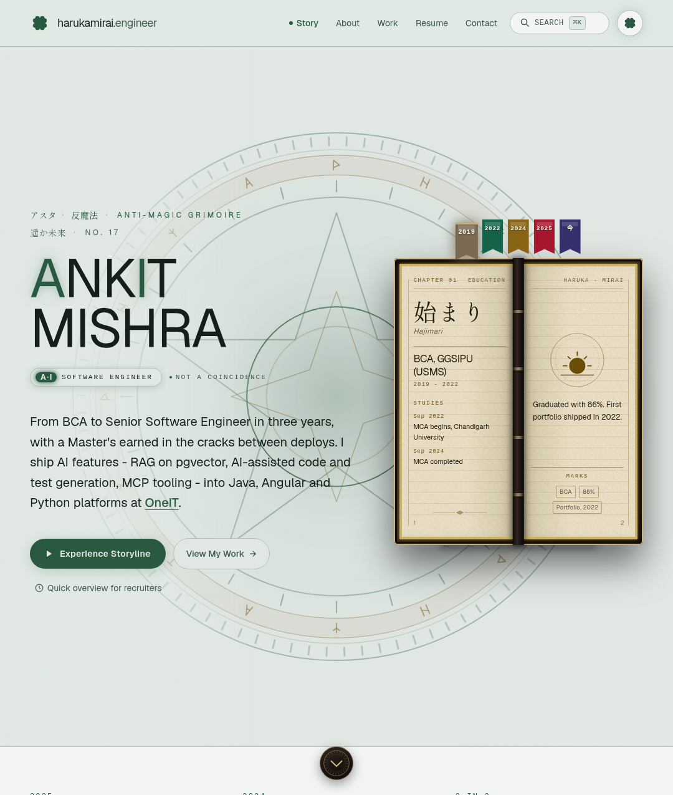
leaf-4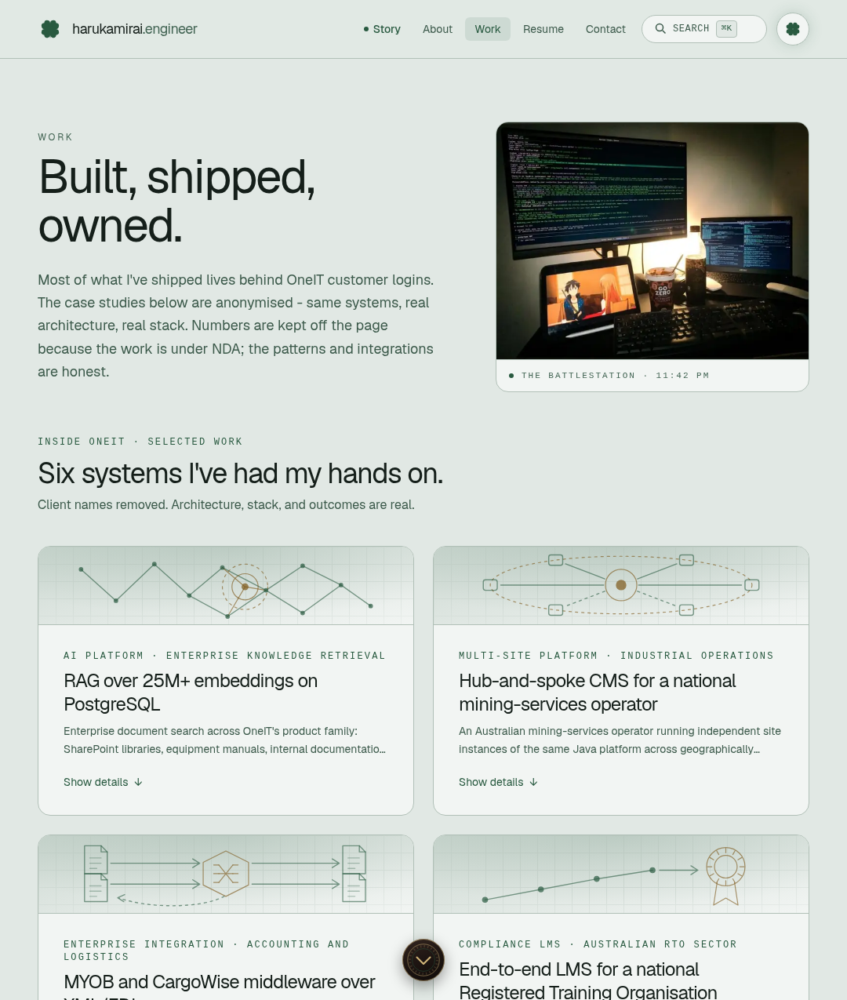
leaf-4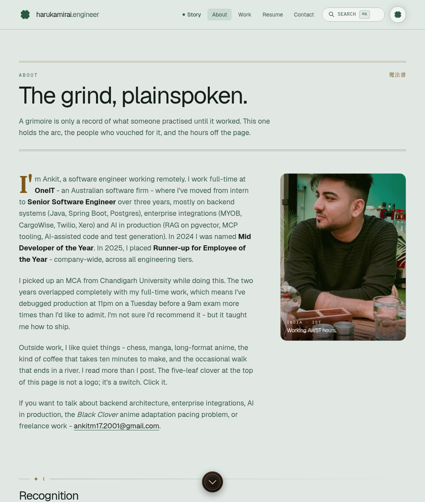
leaf-5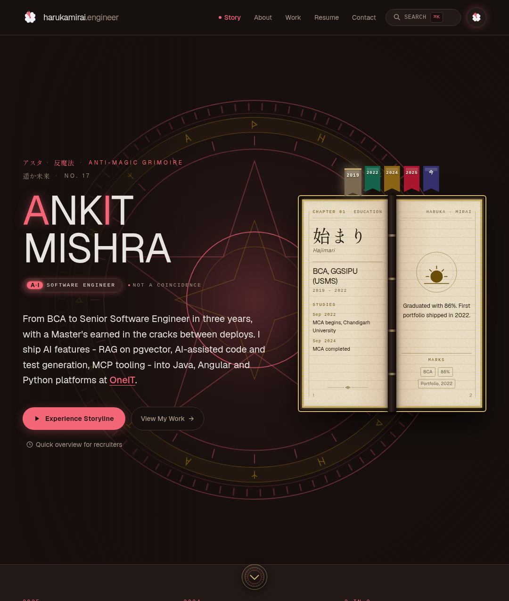
leaf-5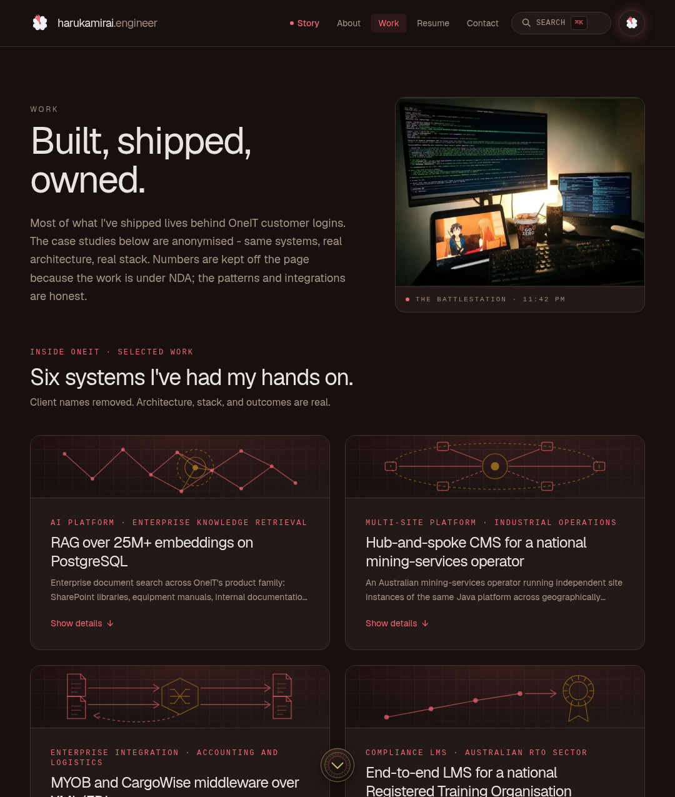
leaf-5Tokens and measured contrast for Five-Leaf
:root,
[data-theme="leaf-4"] {
--bg: #e1e8e4;
--bg-elevated: #f2f5f3;
--bg-inset: #ccd8d1;
--text: #151f1a;
--text-muted: #3c5a4b;
--text-subtle: #446655;
--accent: #295a40;
--accent-hover: #224131;
--accent-glow: rgba(41, 90, 64, 0.20);
--leaf-gold: #7d581a;
--leaf-gold-glow: rgba(125, 88, 26, 0.16);
--border: #b1c0b7;
--border-strong: #8ea89a;
}
[data-theme="leaf-5"] {
--bg: #17100e;
--bg-elevated: #231916;
--bg-inset: #0f0b09;
--text: #e8e4e0;
--text-muted: #a99788;
--text-subtle: #9e8878;
--accent: #f36678;
--accent-hover: #e8a0aa;
--accent-glow: rgba(243, 102, 120, 0.30);
--leaf-gold: #b7871e;
--leaf-gold-glow: rgba(183, 135, 30, 0.25);
--border: #42312b;
--border-strong: #5d4239;
}| Theme | Token | Colour | on --bg | on --bg-elevated |
|---|---|---|---|---|
leaf-4 | --text | #151f1a | 13.57:1 | 15.39:1 |
leaf-4 | --text-muted | #3c5a4b | 6.12:1 | 6.94:1 |
leaf-4 | --text-subtle | #446655 | 5.15:1 | 5.84:1 |
leaf-4 | --accent | #295a40 | 6.41:1 | 7.27:1 |
leaf-4 | --accent-hover | #224131 | 9.03:1 | 10.24:1 |
leaf-4 | --second | #7d581a | 5.14:1 | 5.83:1 |
leaf-5 | --text | #e8e4e0 | 14.87:1 | 13.59:1 |
leaf-5 | --text-muted | #a99788 | 6.69:1 | 6.11:1 |
leaf-5 | --text-subtle | #9e8878 | 5.59:1 | 5.11:1 |
leaf-5 | --accent | #f36678 | 6.25:1 | 5.71:1 |
leaf-5 | --accent-hover | #e8a0aa | 8.99:1 | 8.22:1 |
leaf-5 | --second | #b7871e | 5.82:1 | 5.32:1 |
Dark Cloaked 闇纏 Yami Sukehiro
- Drawn from
- Yami's own colouring. The wiki gives him grey eyes, black hair, a white shirt and trousers with 'an extra layer of tan leather'; his character art measures that tan at #b6a997 / #947f5f. His katana measures a cold teal steel (#4c5957, #687776, #dbe5e2), and Volume 1's character profile lists cigarettes first among his favourite things.
- What it does with the toggle
- Dark Magic is described as having 'a minor gravitational effect, drawing in and absorbing other magic'. A palette that pulls everything in wants a cold accent, not a hot one - so the link colour is the katana's steel and the only warm thing anywhere is the ember. This is the one candidate whose primary accent is cold in both themes.
- Where it is weak
- A teal link is the most 'product' of the five accents. It earns its place here only because the ember second accent is doing real work next to it.
Anti-magic grimoire · no. 17
Built, shipped, owned.
Body copy sits in --text-muted. The accent carries a link like this one, and on hover it moves to the hover value.
AI platform · enterprise retrieval
Anti-magic grimoire · no. 17
Built, shipped, owned.
Body copy sits in --text-muted. The accent carries a link like this one, and on hover it moves to the hover value.
AI platform · enterprise retrieval
leaf-4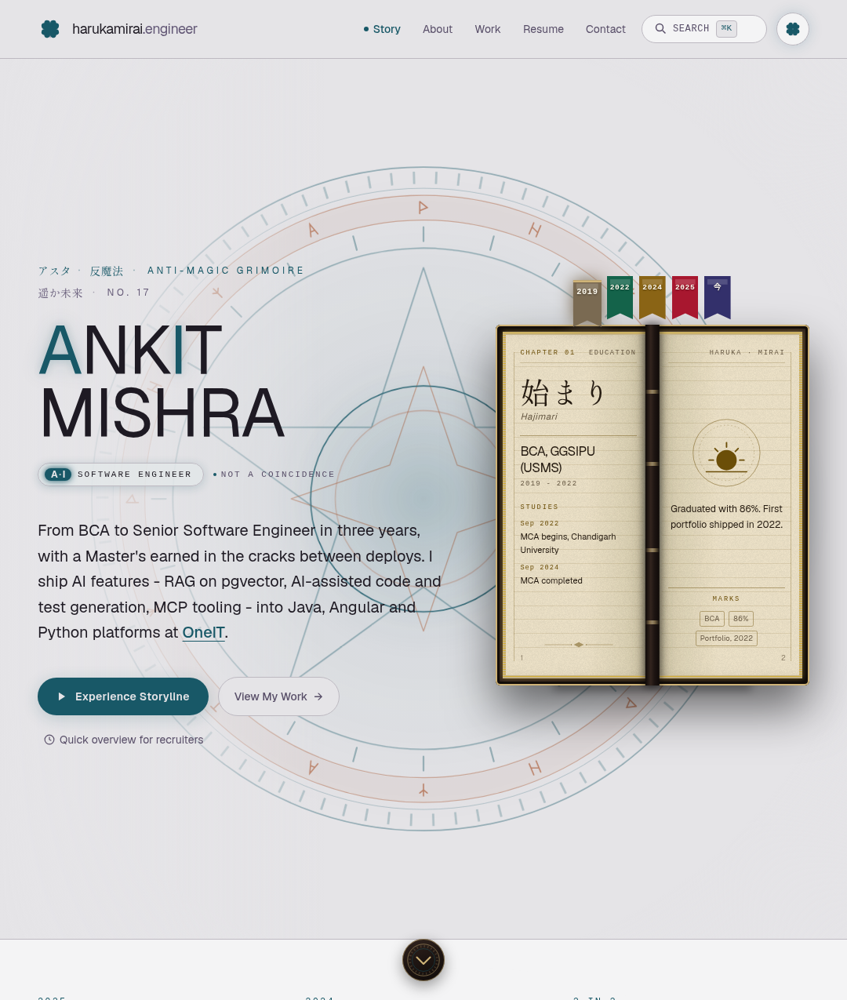
leaf-4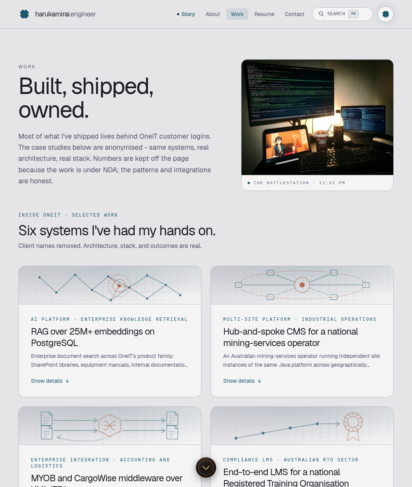
leaf-4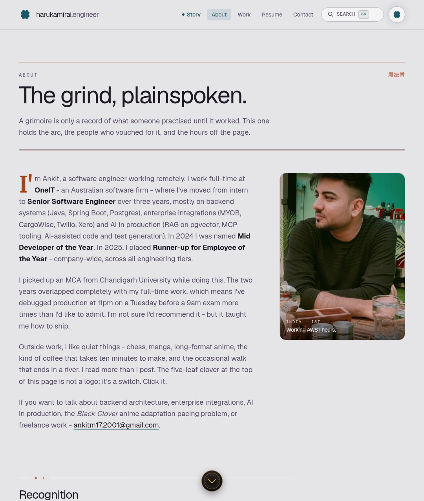
leaf-5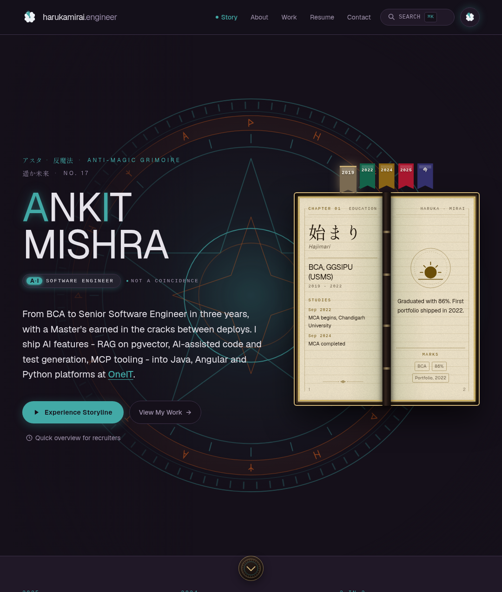
leaf-5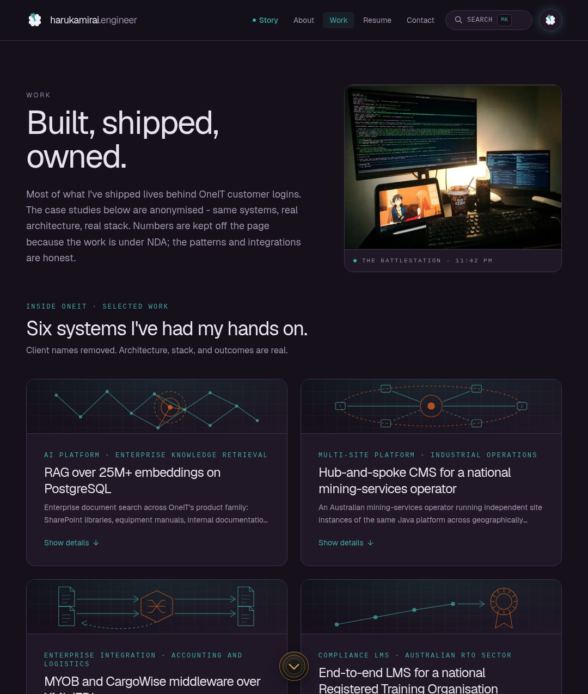
leaf-5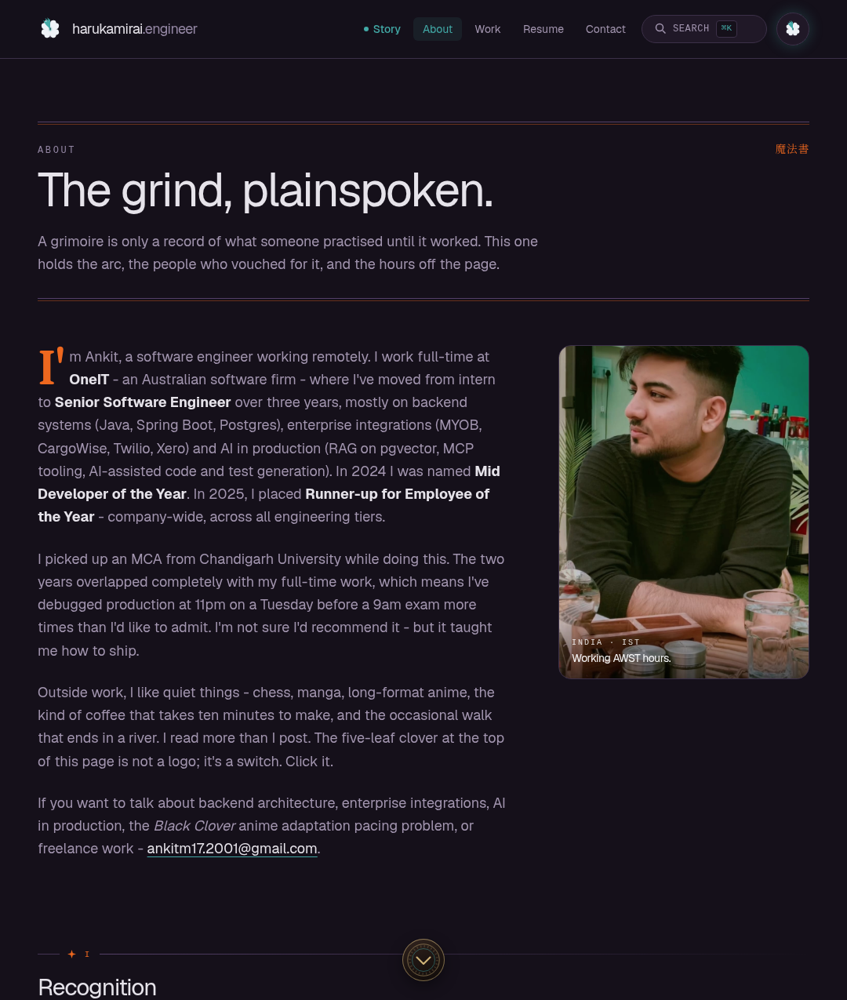
Tokens and measured contrast for Dark Cloaked
:root,
[data-theme="leaf-4"] {
--bg: #e5e4e7;
--bg-elevated: #f4f4f5;
--bg-inset: #d3d0d6;
--text: #1e1a23;
--text-muted: #584e68;
--text-subtle: #645977;
--accent: #185867;
--accent-hover: #15404a;
--accent-glow: rgba(24, 88, 103, 0.20);
--ember-accent: #a04318;
--ember-accent-glow: rgba(160, 67, 24, 0.16);
--border: #bdb9c1;
--border-strong: #a49eab;
}
[data-theme="leaf-5"] {
--bg: #15101a;
--bg-elevated: #201827;
--bg-inset: #0e0a11;
--text: #e6e3ea;
--text-muted: #a295af;
--text-subtle: #9487a4;
--accent: #42a9a6;
--accent-hover: #8bc2c0;
--accent-glow: rgba(66, 169, 166, 0.30);
--ember-accent: #ee681f;
--ember-accent-glow: rgba(238, 104, 31, 0.25);
--border: #3c3048;
--border-strong: #544068;
}| Theme | Token | Colour | on --bg | on --bg-elevated |
|---|---|---|---|---|
leaf-4 | --text | #1e1a23 | 13.51:1 | 15.57:1 |
leaf-4 | --text-muted | #584e68 | 6.13:1 | 7.06:1 |
leaf-4 | --text-subtle | #645977 | 5.12:1 | 5.90:1 |
leaf-4 | --accent | #185867 | 6.30:1 | 7.26:1 |
leaf-4 | --accent-hover | #15404a | 8.90:1 | 10.25:1 |
leaf-4 | --second | #a04318 | 5.01:1 | 5.77:1 |
leaf-5 | --text | #e6e3ea | 14.76:1 | 13.54:1 |
leaf-5 | --text-muted | #a295af | 6.65:1 | 6.10:1 |
leaf-5 | --text-subtle | #9487a4 | 5.59:1 | 5.13:1 |
leaf-5 | --accent | #42a9a6 | 6.65:1 | 6.11:1 |
leaf-5 | --accent-hover | #8bc2c0 | 9.43:1 | 8.66:1 |
leaf-5 | --second | #ee681f | 5.92:1 | 5.43:1 |
Black Asta ブラックアスタ The sky he stands in
- Drawn from
- One anime frame of Black Asta, sampled top to bottom: sky #14152e (indigo) -> #462b54 (violet) -> #600913 (crimson) -> #8b3457 (rose) -> ground #87161f, with a warm #d1905d flare in the upper sky. Five stops, no black anywhere in the frame except the cloak.
- What it does with the toggle
- This is the direct answer to 'the Black Bulls invite near-black plus one hot colour'. The source frame does not do that, so neither does this. The dark ground is a true indigo, the accent is the rose of the horizon and the second accent is the amber flare. Both themes have a chromatic ground.
- Where it is weak
- The most opinionated of the five. A mauve light theme is a commitment, and the body copy inherits a violet cast that you either want or do not.
Anti-magic grimoire · no. 17
Built, shipped, owned.
Body copy sits in --text-muted. The accent carries a link like this one, and on hover it moves to the hover value.
AI platform · enterprise retrieval
Anti-magic grimoire · no. 17
Built, shipped, owned.
Body copy sits in --text-muted. The accent carries a link like this one, and on hover it moves to the hover value.
AI platform · enterprise retrieval
leaf-4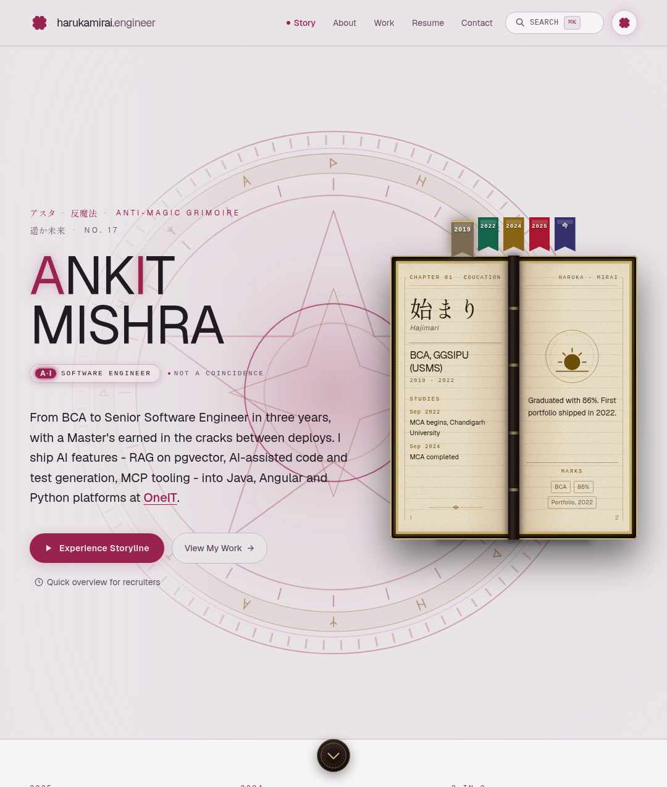
leaf-4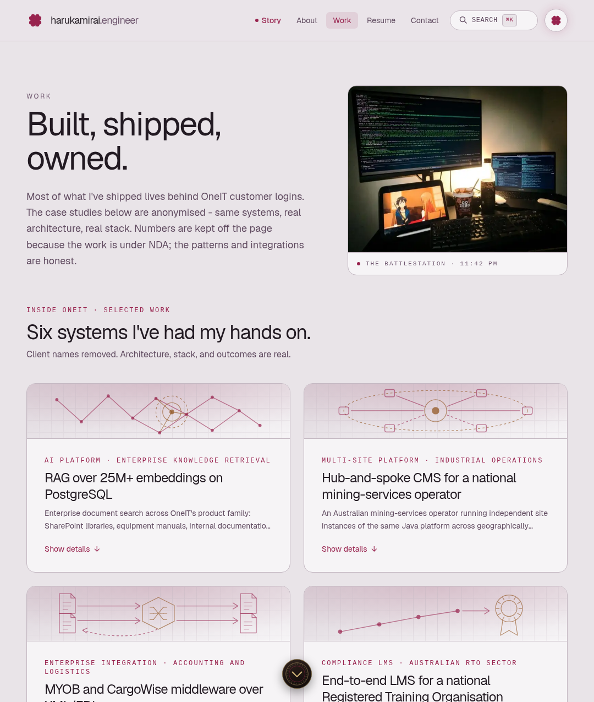
leaf-4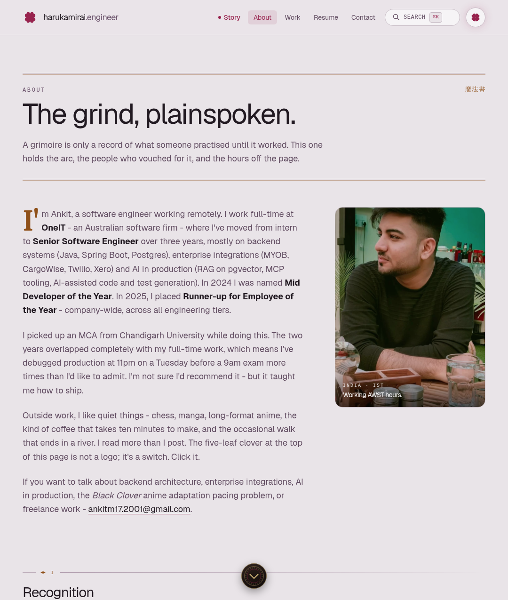
leaf-5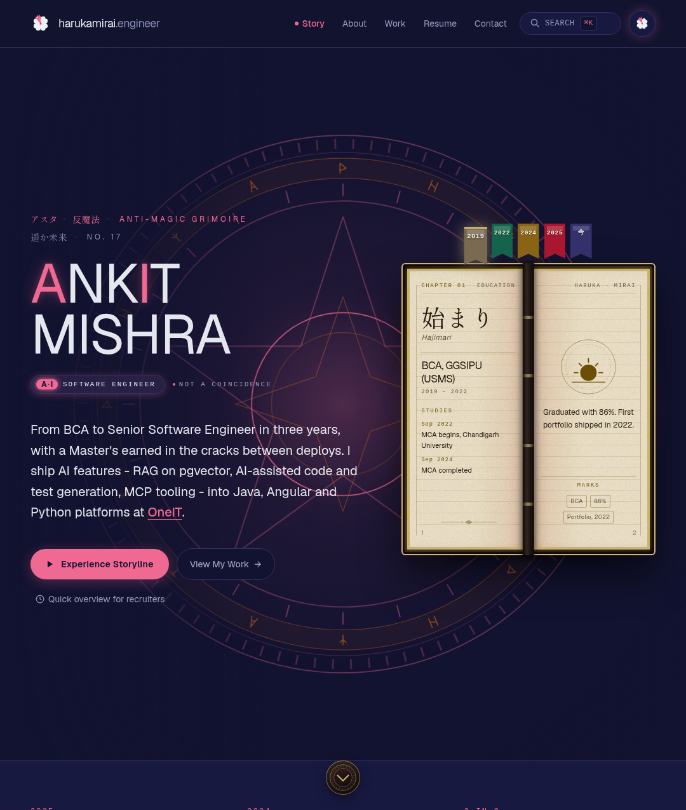
leaf-5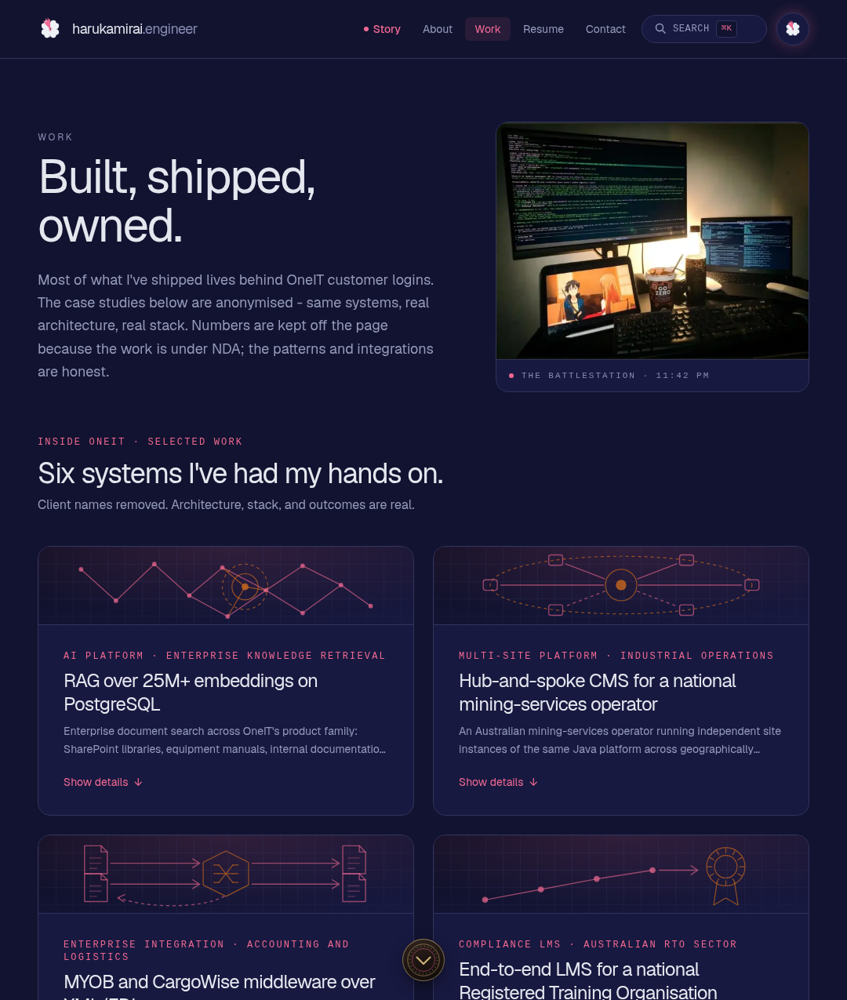
leaf-5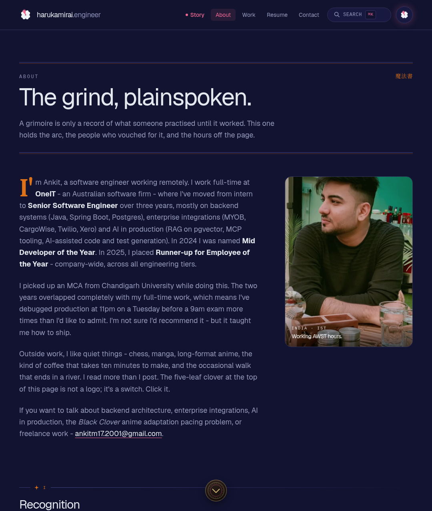
Tokens and measured contrast for Black Asta
:root,
[data-theme="leaf-4"] {
--bg: #e9e4e8;
--bg-elevated: #f6f4f6;
--bg-inset: #dad1d8;
--text: #221a22;
--text-muted: #614c61;
--text-subtle: #6f576f;
--accent: #98234e;
--accent-hover: #6d1e3b;
--accent-glow: rgba(152, 35, 78, 0.20);
--amber: #8f5019;
--amber-glow: rgba(143, 80, 25, 0.16);
--border: #c4b8c2;
--border-strong: #af9bac;
}
[data-theme="leaf-5"] {
--bg: #121330;
--bg-elevated: #181940;
--bg-inset: #0d0e23;
--text: #e5e7ef;
--text-muted: #959bbc;
--text-subtle: #868cb1;
--accent: #f06992;
--accent-hover: #e5a0b4;
--accent-glow: rgba(240, 105, 146, 0.30);
--amber: #de7219;
--amber-glow: rgba(222, 114, 25, 0.25);
--border: #32335d;
--border-strong: #414484;
}| Theme | Token | Colour | on --bg | on --bg-elevated |
|---|---|---|---|---|
leaf-4 | --text | #221a22 | 13.50:1 | 15.49:1 |
leaf-4 | --text-muted | #614c61 | 6.16:1 | 7.07:1 |
leaf-4 | --text-subtle | #6f576f | 5.12:1 | 5.87:1 |
leaf-4 | --accent | #98234e | 6.23:1 | 7.15:1 |
leaf-4 | --accent-hover | #6d1e3b | 8.81:1 | 10.10:1 |
leaf-4 | --second | #8f5019 | 5.02:1 | 5.76:1 |
leaf-5 | --text | #e5e7ef | 14.64:1 | 13.59:1 |
leaf-5 | --text-muted | #959bbc | 6.62:1 | 6.14:1 |
leaf-5 | --text-subtle | #868cb1 | 5.51:1 | 5.11:1 |
leaf-5 | --accent | #f06992 | 6.15:1 | 5.70:1 |
leaf-5 | --accent-hover | #e5a0b4 | 8.63:1 | 8.00:1 |
leaf-5 | --second | #de7219 | 5.62:1 | 5.21:1 |
Black Bull 黒の暴牛 The squad
- Drawn from
- The squad robe: 'a black mantle with gold trimming and hood... a gold-colored button'. The insignia art measures black plus a pale warm gold (#d2bd90, #efd9a6, #8b7556); the robe black measures #191617, which is a warm near-black with a faint magenta cast rather than a neutral one. The squad's forest headquarters measures olive (#6e7e30, #585615) with dusty terracotta roof tiles.
- What it does with the toggle
- The only candidate where GOLD is the primary accent rather than the afterthought. That is what the robe actually is: black with gold trim, and the trim is the only thing on it that reads at distance. The light theme is the clearing the headquarters sits in, and terracotta comes off the roof.
- Where it is weak
- Gold as a link colour is unusual and reads slightly ceremonial. If the site wants to feel scrappy rather than decorated, this is the wrong one.
Anti-magic grimoire · no. 17
Built, shipped, owned.
Body copy sits in --text-muted. The accent carries a link like this one, and on hover it moves to the hover value.
AI platform · enterprise retrieval
Anti-magic grimoire · no. 17
Built, shipped, owned.
Body copy sits in --text-muted. The accent carries a link like this one, and on hover it moves to the hover value.
AI platform · enterprise retrieval
leaf-4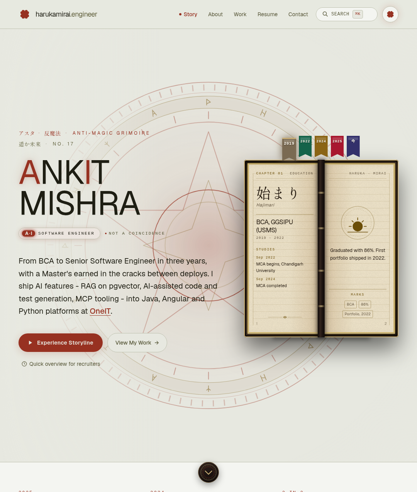
leaf-4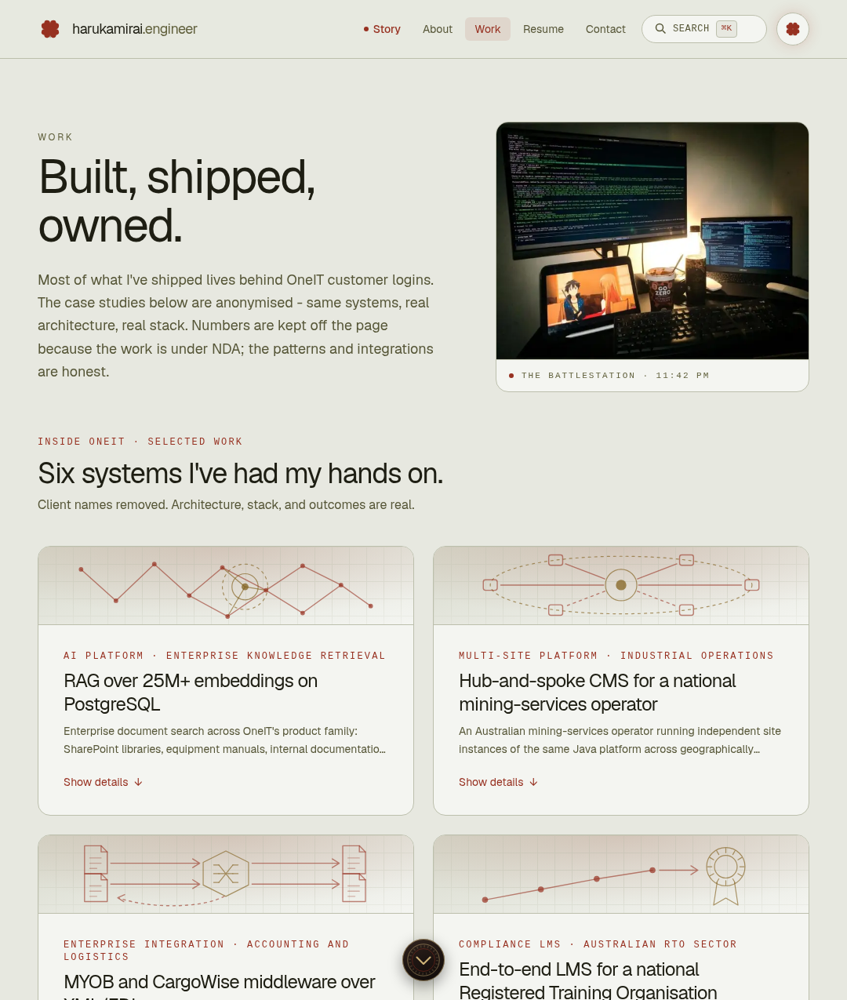
leaf-4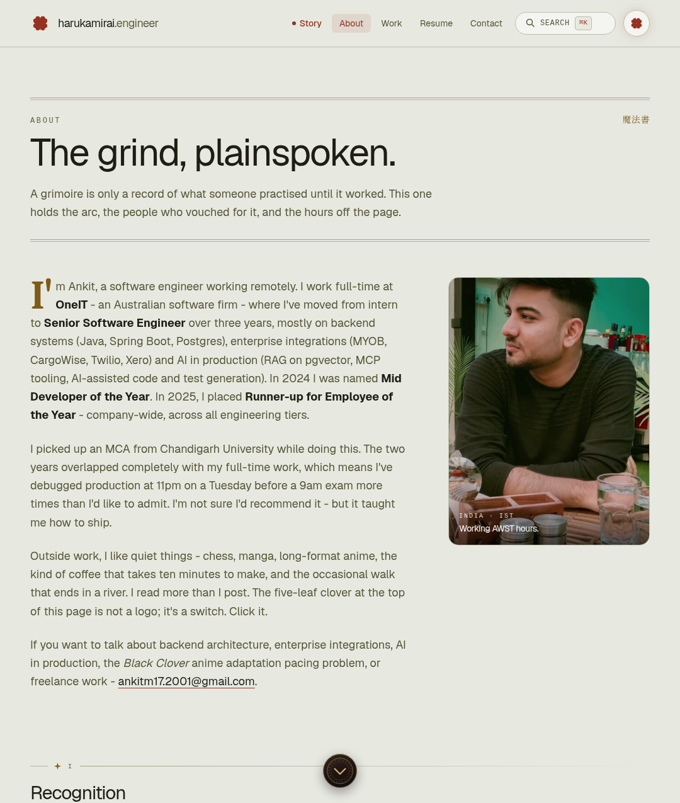
leaf-5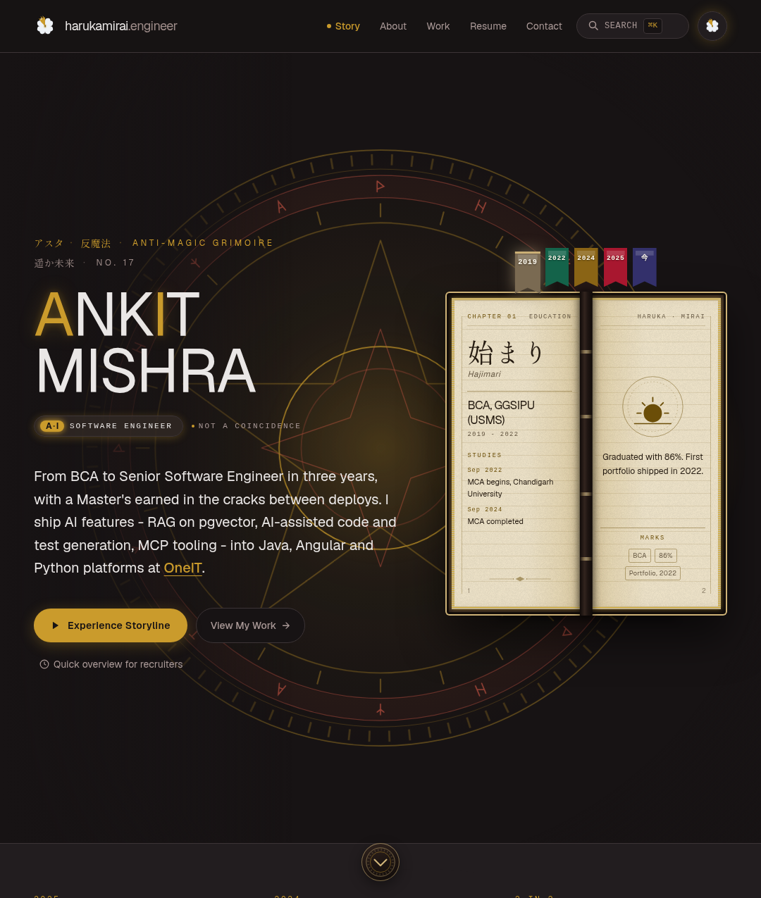
leaf-5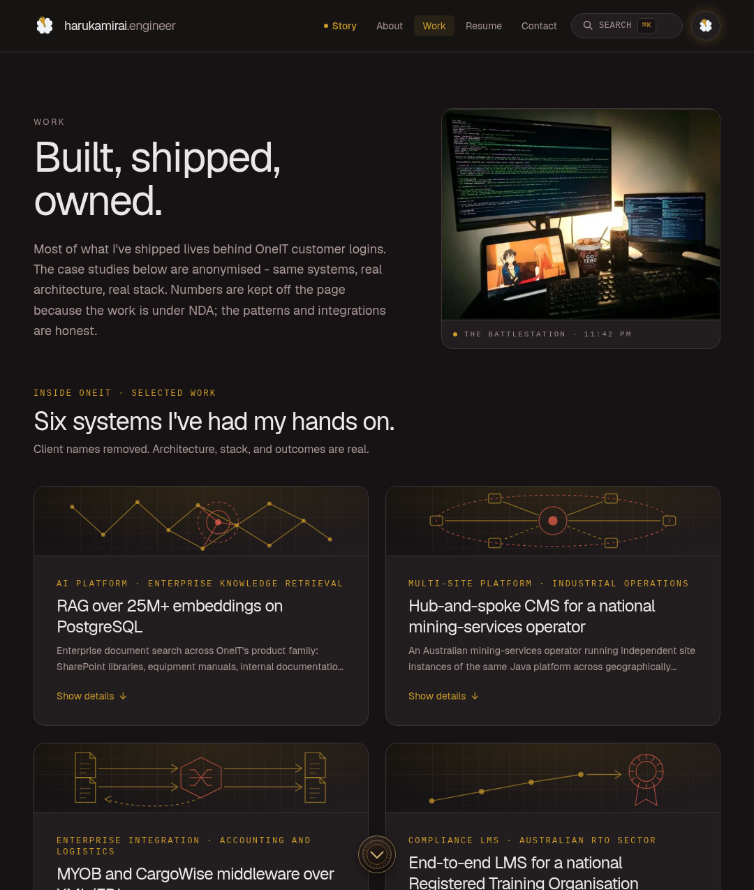
leaf-5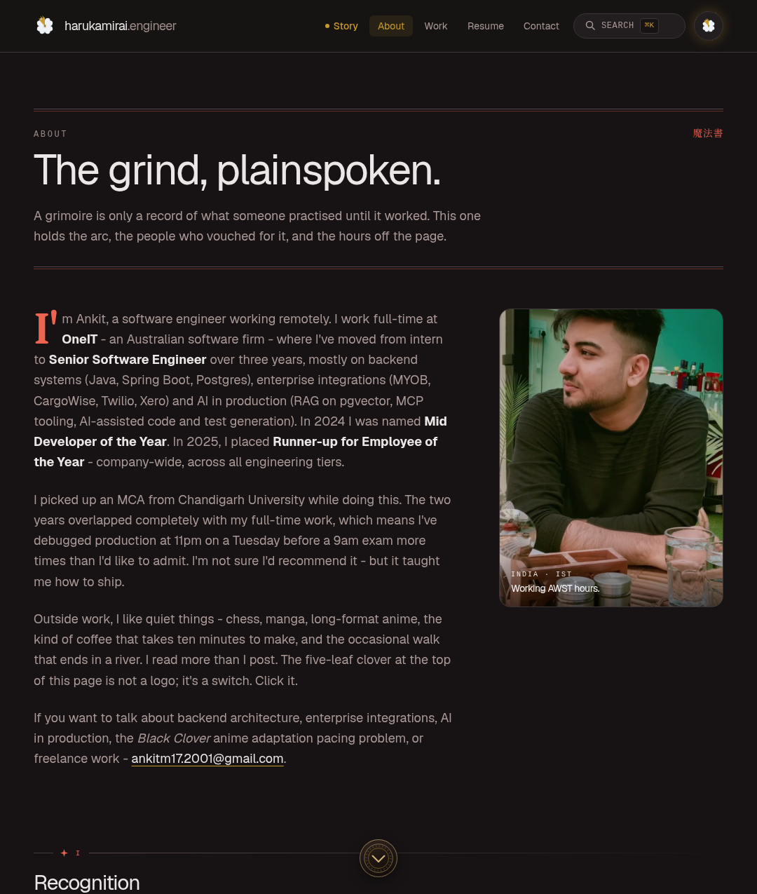
Tokens and measured contrast for Black Bull
:root,
[data-theme="leaf-4"] {
--bg: #e7e8e0;
--bg-elevated: #f4f5f1;
--bg-inset: #d6d8ca;
--text: #1e1e13;
--text-muted: #565637;
--text-subtle: #62623e;
--accent: #973121;
--accent-hover: #6d281d;
--accent-glow: rgba(151, 49, 33, 0.20);
--terracotta: #7e5b16;
--terracotta-glow: rgba(126, 91, 22, 0.16);
--border: #bcbfac;
--border-strong: #a1a586;
}
[data-theme="leaf-5"] {
--bg: #171314;
--bg-elevated: #221d1f;
--bg-inset: #0e0c0d;
--text: #eae7e6;
--text-muted: #aa9997;
--text-subtle: #9d8b88;
--accent: #ca9b2c;
--accent-hover: #d4bf8d;
--accent-glow: rgba(202, 155, 44, 0.30);
--terracotta: #ee644f;
--terracotta-glow: rgba(238, 100, 79, 0.25);
--border: #3c3436;
--border-strong: #53464a;
}| Theme | Token | Colour | on --bg | on --bg-elevated |
|---|---|---|---|---|
leaf-4 | --text | #1e1e13 | 13.61:1 | 15.34:1 |
leaf-4 | --text-muted | #565637 | 6.12:1 | 6.89:1 |
leaf-4 | --text-subtle | #62623e | 5.10:1 | 5.75:1 |
leaf-4 | --accent | #973121 | 6.13:1 | 6.91:1 |
leaf-4 | --accent-hover | #6d281d | 8.63:1 | 9.73:1 |
leaf-4 | --second | #7e5b16 | 5.01:1 | 5.65:1 |
leaf-5 | --text | #eae7e6 | 14.98:1 | 13.51:1 |
leaf-5 | --text-muted | #aa9997 | 6.77:1 | 6.10:1 |
leaf-5 | --text-subtle | #9d8b88 | 5.69:1 | 5.13:1 |
leaf-5 | --accent | #ca9b2c | 7.23:1 | 6.52:1 |
leaf-5 | --accent-hover | #d4bf8d | 10.21:1 | 9.21:1 |
leaf-5 | --second | #ee644f | 5.77:1 | 5.20:1 |
Hage ハージ The kingdom, noon and midnight
- Drawn from
- The grimoire tower at Hage, where Asta and Yuno are given their books. The frame measures sunlit sandstone #a78b6e, ochre earth #bd904b, foliage #515f1c to #6e7e30, sunlit grass #eee762, a terracotta turret roof #6b1d17 and a hazy near-white sky #e4e3de. The Black Bull base in flight at night measures ultramarine: #181a37, #1d1e6b, #0e0f35.
- What it does with the toggle
- The quietest candidate, and the only one that is about the Clover Kingdom rather than about a person. leaf-4 is the tower at noon; leaf-5 is the same country at night, which the show renders as ultramarine and not as black. The community wiki codes the kingdom #506956 on #cf9c3d - sage and antique gold - which is the same reading arrived at independently.
- Where it is weak
- Measured weakness. Every light ground sits at roughly 1.03-1.05:1 against the fixed parchment, so the book never separates by luminance - it has to separate by hue. This ground is 3.6 degrees of hue from the parchment, against 164.5 for the current palette, so it is the one candidate where the grimoire genuinely reads as cream on cream. Black Bull is second worst at 25.3 degrees; the other three are 90 degrees or more.
Anti-magic grimoire · no. 17
Built, shipped, owned.
Body copy sits in --text-muted. The accent carries a link like this one, and on hover it moves to the hover value.
AI platform · enterprise retrieval
Anti-magic grimoire · no. 17
Built, shipped, owned.
Body copy sits in --text-muted. The accent carries a link like this one, and on hover it moves to the hover value.
AI platform · enterprise retrieval
leaf-4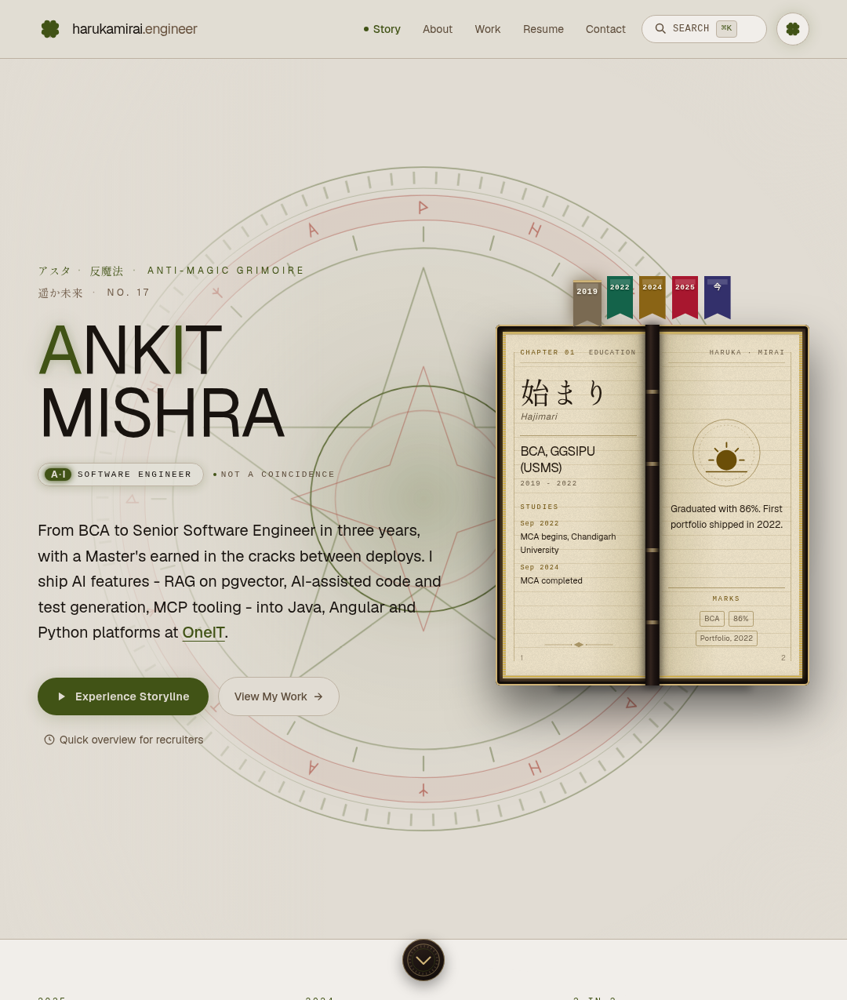
leaf-4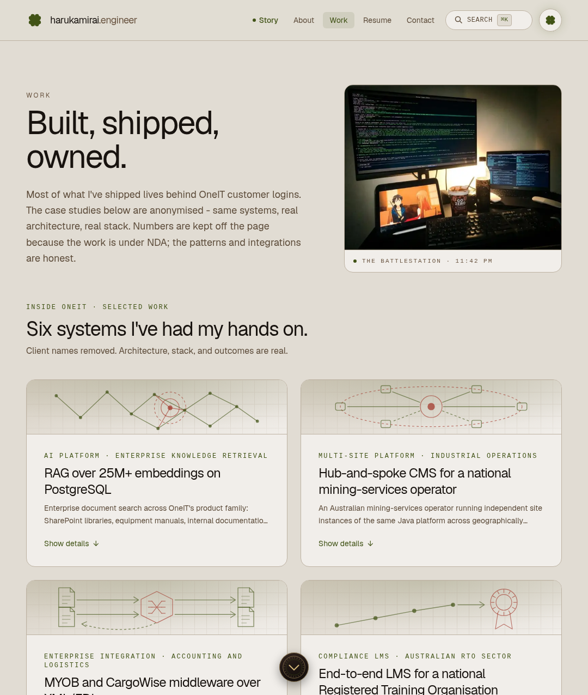
leaf-4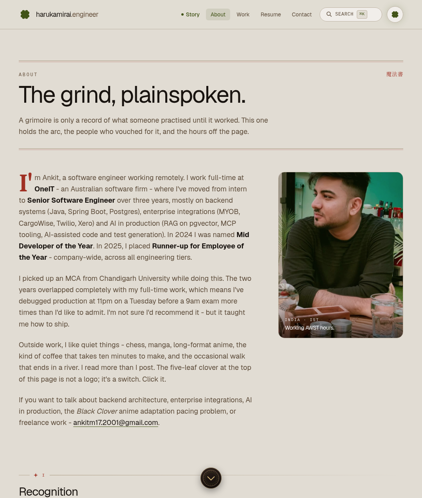
leaf-5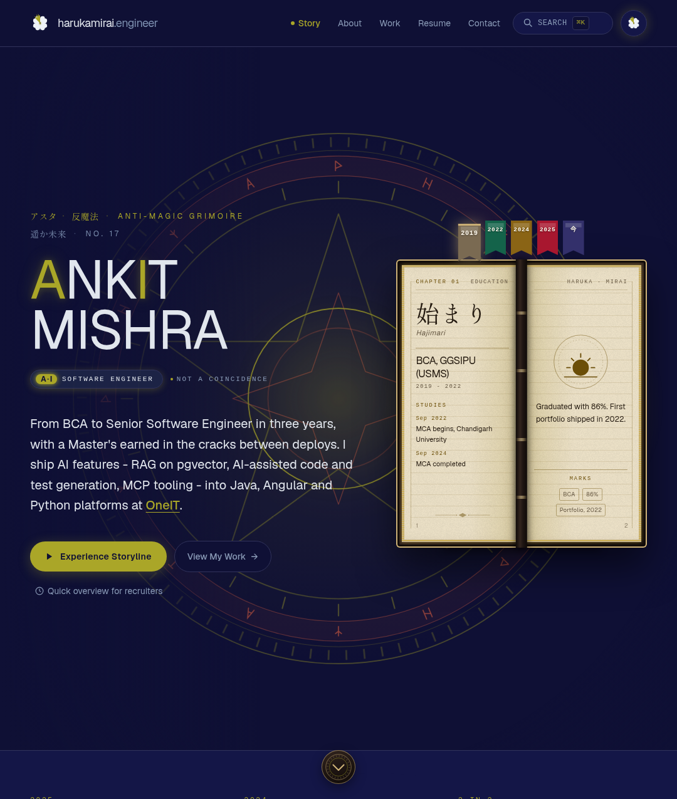
leaf-5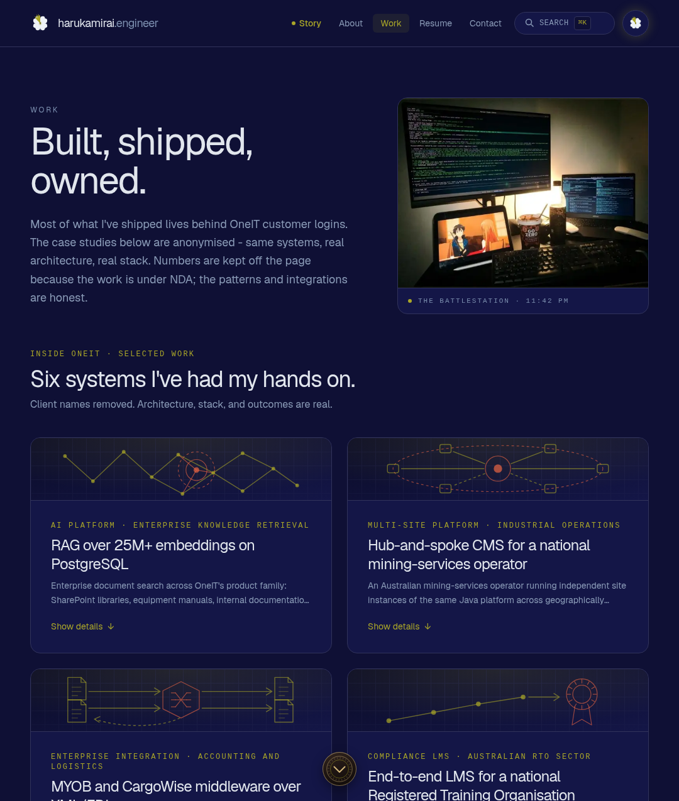
leaf-5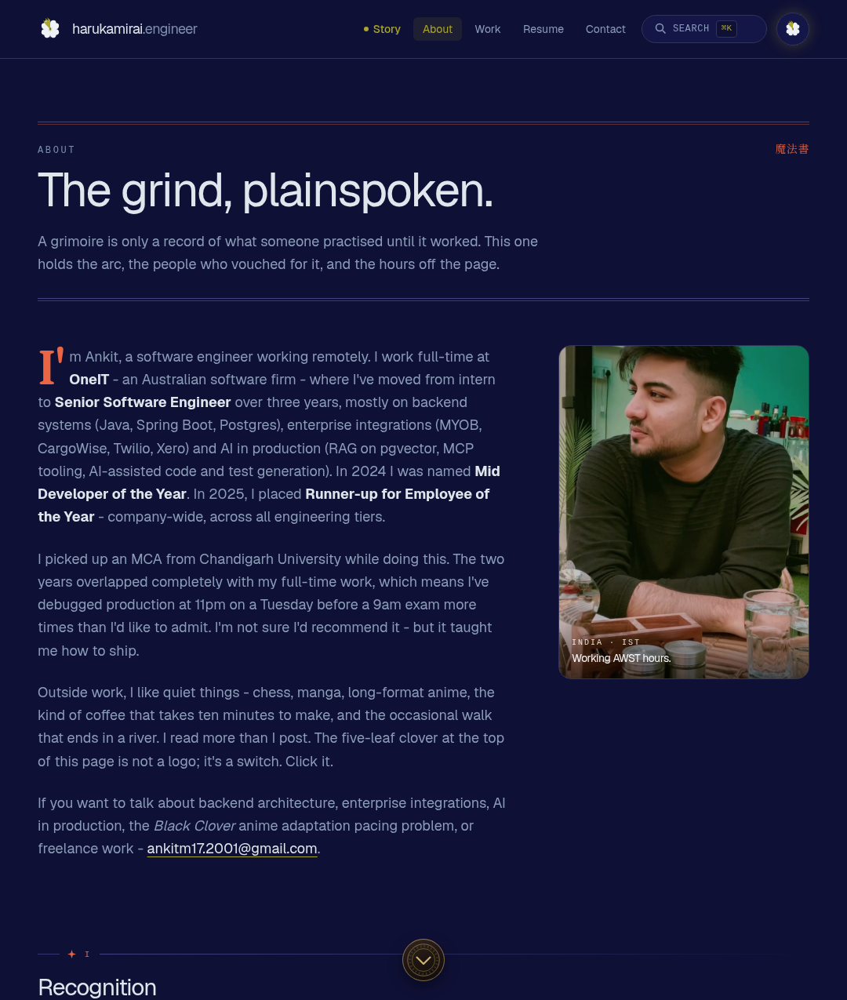
Tokens and measured contrast for Hage
:root,
[data-theme="leaf-4"] {
--bg: #e1dcd3;
--bg-elevated: #f1eeea;
--bg-inset: #d2cabc;
--text: #18130f;
--text-muted: #5c4b39;
--text-subtle: #6a5541;
--accent: #415316;
--accent-hover: #303c13;
--accent-glow: rgba(65, 83, 22, 0.20);
--terracotta: #a03023;
--terracotta-glow: rgba(160, 48, 35, 0.16);
--border: #bdb2a2;
--border-strong: #a9987e;
}
[data-theme="leaf-5"] {
--bg: #0f1035;
--bg-elevated: #141647;
--bg-inset: #0b0c27;
--text: #e1e6ed;
--text-muted: #8b9cb8;
--text-subtle: #7b8eae;
--accent: #aaa628;
--accent-hover: #c7c572;
--accent-glow: rgba(170, 166, 40, 0.30);
--terracotta: #ea6543;
--terracotta-glow: rgba(234, 101, 67, 0.25);
--border: #31335b;
--border-strong: #414383;
}| Theme | Token | Colour | on --bg | on --bg-elevated |
|---|---|---|---|---|
leaf-4 | --text | #18130f | 13.50:1 | 15.94:1 |
leaf-4 | --text-muted | #5c4b39 | 6.10:1 | 7.20:1 |
leaf-4 | --text-subtle | #6a5541 | 5.15:1 | 6.08:1 |
leaf-4 | --accent | #415316 | 6.22:1 | 7.34:1 |
leaf-4 | --accent-hover | #303c13 | 8.63:1 | 10.19:1 |
leaf-4 | --second | #a03023 | 5.23:1 | 6.17:1 |
leaf-5 | --text | #e1e6ed | 14.61:1 | 13.55:1 |
leaf-5 | --text-muted | #8b9cb8 | 6.58:1 | 6.11:1 |
leaf-5 | --text-subtle | #7b8eae | 5.52:1 | 5.12:1 |
leaf-5 | --accent | #aaa628 | 7.15:1 | 6.63:1 |
leaf-5 | --accent-hover | #c7c572 | 10.17:1 | 9.44:1 |
leaf-5 | --second | #ea6543 | 5.62:1 | 5.21:1 |
Woad and Rubric What is in globals.css today
A European scriptorium: iron gall, lapis, vermilion, gold leaf. Shown for comparison only. It is grimoire-adjacent and it is not Black Clover.
Anti-magic grimoire · no. 17
Built, shipped, owned.
Body copy sits in --text-muted. The accent carries a link like this one, and on hover it moves to the hover value.
AI platform · enterprise retrieval
Anti-magic grimoire · no. 17
Built, shipped, owned.
Body copy sits in --text-muted. The accent carries a link like this one, and on hover it moves to the hover value.
AI platform · enterprise retrieval
leaf-4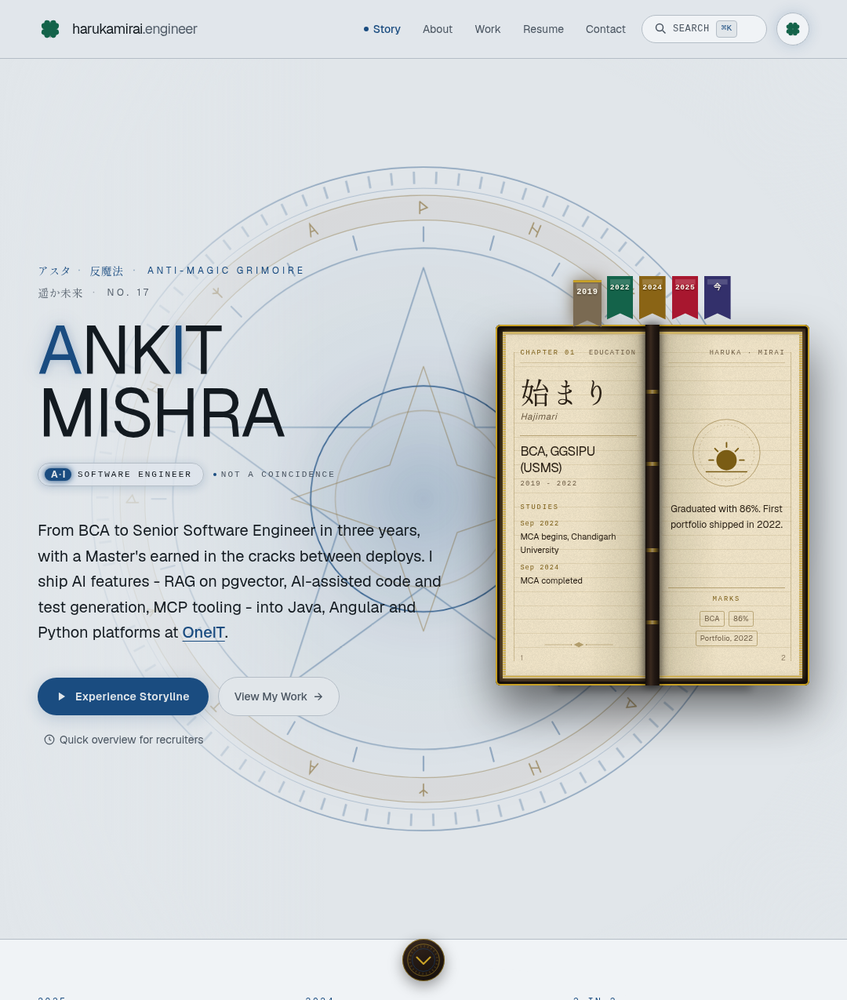
leaf-4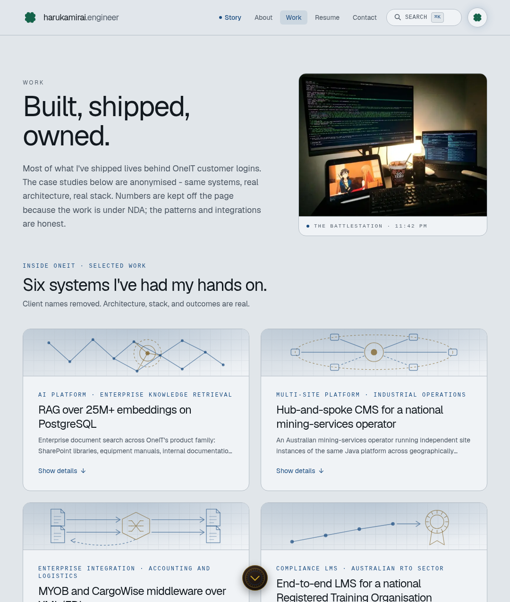
leaf-4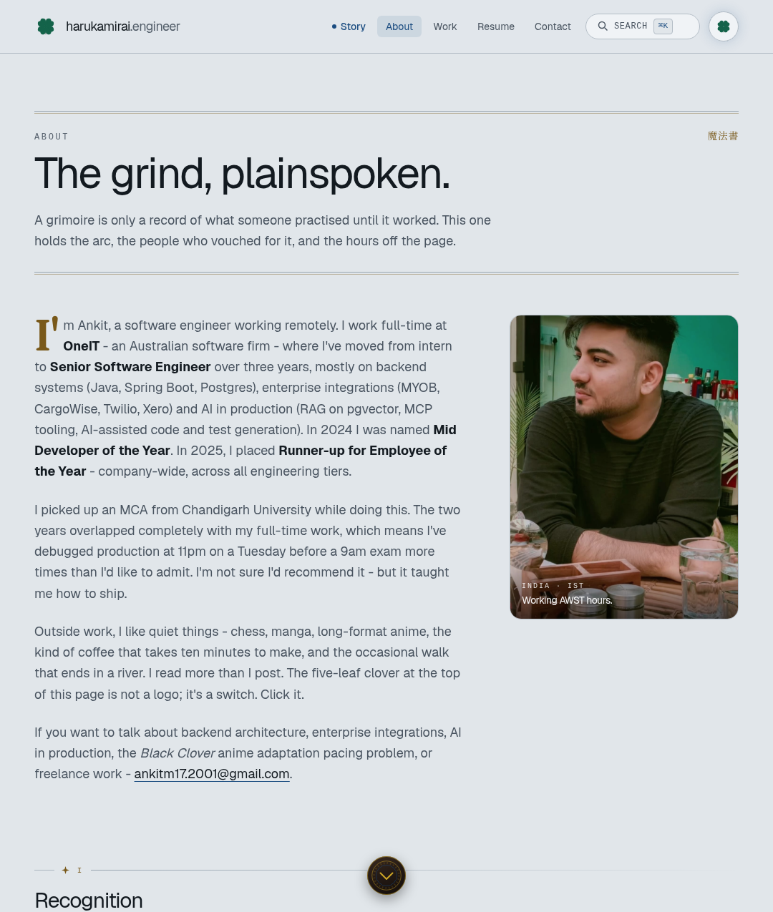
leaf-5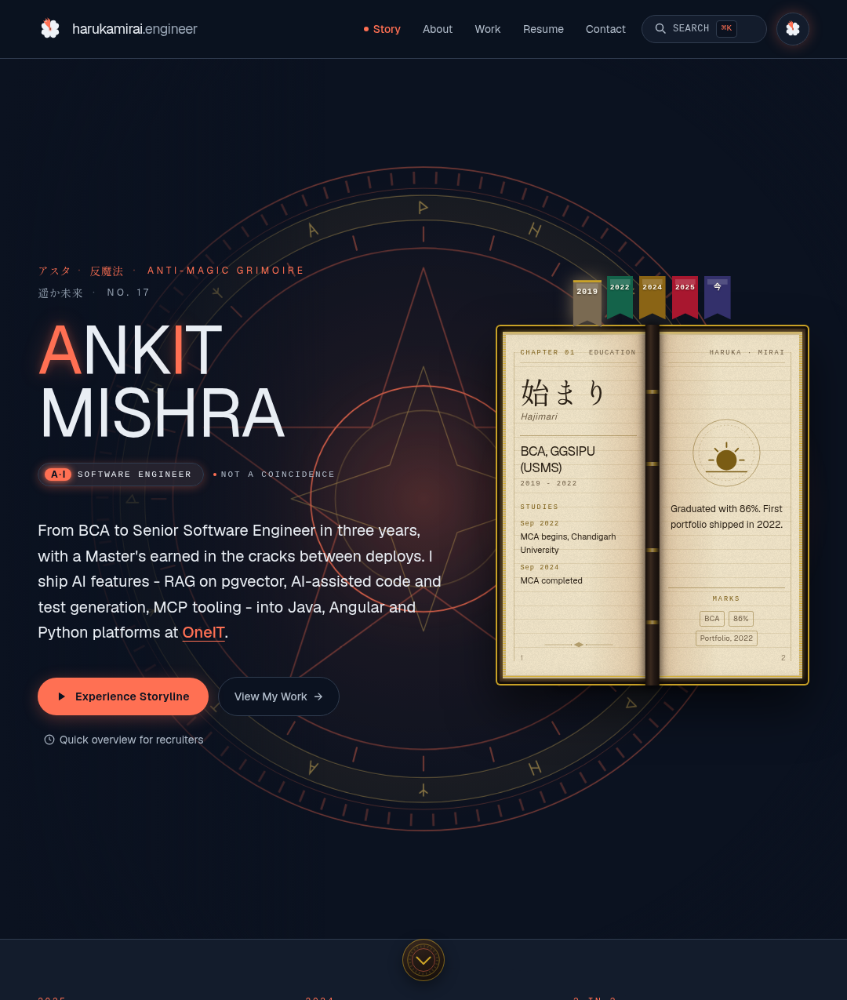
leaf-5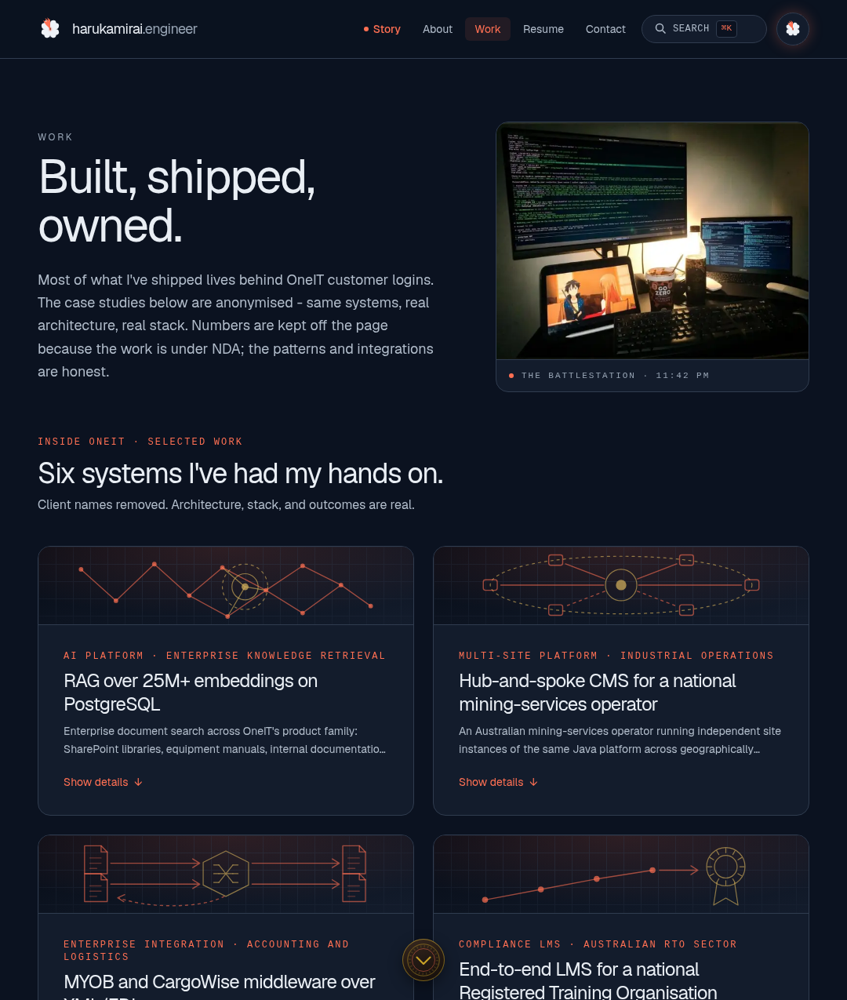
leaf-5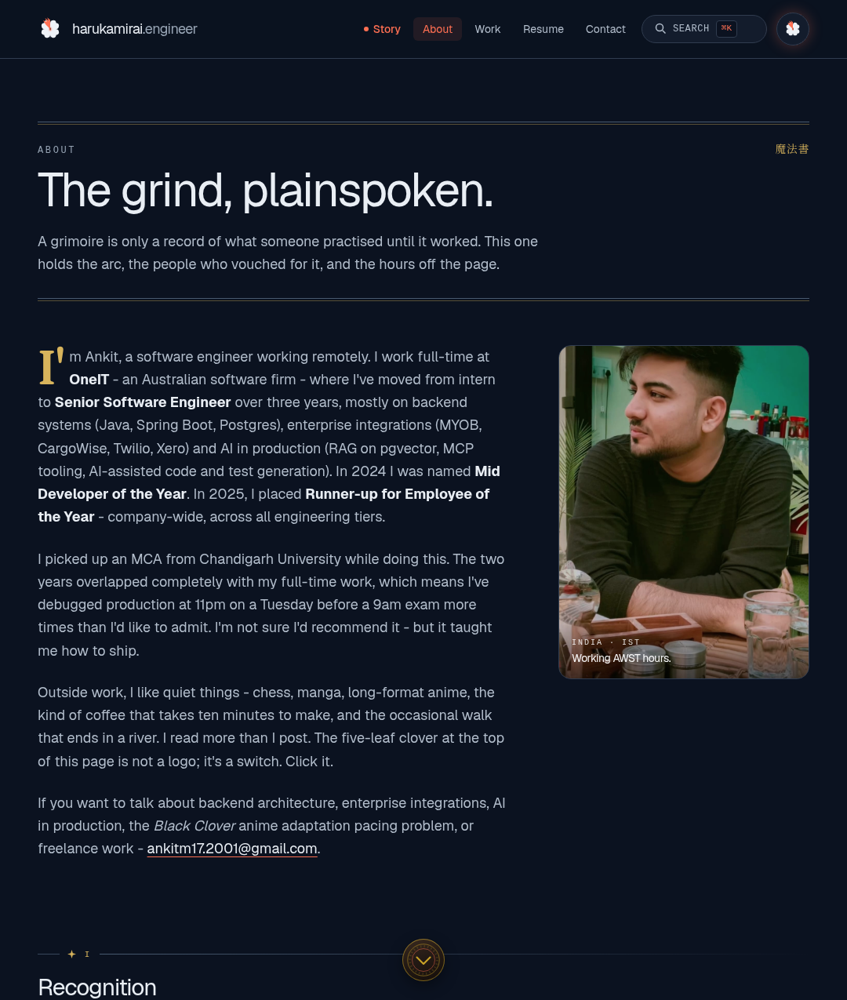
The grimoire, remade from the frame
The --leather-*, --foil, --parchment*, --gilt* and --page-ink* tokens sit outside both [data-theme] blocks on purpose: the book is one physical object lit two ways. That doctrine is right and it does not change. What changes is which object.
The current values describe a medieval codex - tanned brown leather, a bright gold stamp, cream parchment. Asta's grimoire is "tattered and filthy" and its clover is "largely unseen due to the dirt covering it". The frame agrees: the cover measures a mottled soot-brown between #130d0c and #352320, the five-leaf stamp is #0f0809 - darker than the cover - and the page edges glow crimson at #680609, not gold.
The change
- The leather goes sootier and darker, and loses its tan.
- The stamp stops being the brightest thing on the cover.
--foilmoves to the Black Bull trim gold measured on the insignia (#d2bd90family) rather than a bright leaf gold. - A new fixed
--embercarries the crimson page-edge glow. It is a rim light on the book only, never text, never a ground. - The parchment stays a readable page, because a page that cannot be read is not faithful to anything.
Gate
| Pairing | Ratio | Floor | |
|---|---|---|---|
--foil on --leather-a | #d0b478 on #1f1613 | 8.86:1 | 4.5:1 |
--foil-hi on --leather-a | #ecd9a6 on #1f1613 | 12.72:1 | 4.5:1 |
--gilt on --leather-a | #d4af37 on #1f1613 | 8.45:1 | 3.0:1 |
--page-ink on --parchment | #241a10 on #ece1c7 | 13.14:1 | 4.5:1 |
--page-ink-soft on --parchment | #655742 on #ece1c7 | 5.40:1 | 4.5:1 |
--gilt-ink on --parchment | #6b4e08 on #ece1c7 | 5.95:1 | 4.5:1 |
--page-ink on --parchment-b | #241a10 on #e0d2b0 | 11.39:1 | 4.5:1 |
--page-ink-soft on --parchment-b | #655742 on #e0d2b0 | 4.68:1 | 4.5:1 |
--gilt-ink on --parchment-b | #6b4e08 on #e0d2b0 | 5.16:1 | 4.5:1 |
:root {
--leather-a: #1f1613;
--leather-b: #33251f;
--leather-edge: #100b09;
--foil: #d0b478;
--foil-hi: #ecd9a6;
--parchment: #ece1c7;
--parchment-b: #e0d2b0;
--parchment-edge: #c6b489;
--gilt: #d4af37;
--gilt-ink: #6b4e08;
--page-ink: #241a10;
--page-ink-soft: #655742;
--ember: #7c0a12;
}One measured caveat that applies to every candidate and to today's palette too. The parchment sits at 1.03 to 1.05:1 against every light ground, so the book can never separate from a light page by luminance - it has to separate by hue. Distance from the parchment's hue: current palette 164.5°, Dark Cloaked 142.2°, Five-Leaf 103.6°, Black Asta 90.2°, Black Bull 25.3°, Hage 3.6°. Hage is the one where the book genuinely reads as cream on cream in leaf-4.
Glyphs and motion
Four proposals, all original geometry, all transform and opacity only, all guarded by prefers-reduced-motion, no new dependency and no filter. Three of them are running below - pick a candidate and press play.
clover + eye
dimension slash
leaf-5 → leaf-4
demon-dweller mark
clover + eye
dimension slash
leaf-4 → leaf-5
demon-dweller mark
clover + eye
dimension slash
leaf-5 → leaf-4
demon-dweller mark
clover + eye
dimension slash
leaf-4 → leaf-5
demon-dweller mark
clover + eye
dimension slash
leaf-5 → leaf-4
demon-dweller mark
clover + eye
dimension slash
leaf-4 → leaf-5
demon-dweller mark
clover + eye
dimension slash
leaf-5 → leaf-4
demon-dweller mark
clover + eye
dimension slash
leaf-4 → leaf-5
demon-dweller mark
clover + eye
dimension slash
leaf-5 → leaf-4
demon-dweller mark
clover + eye
dimension slash
leaf-4 → leaf-5
demon-dweller mark
1. The fifth leaf arrives dark, not bright
The site already animates --fifth-scale and --fifth-rotate with an overshoot, which is the right motion. The colour is wrong against the source: the corrupted clover turns black. Paint the fifth leaf near the ground instead of in the accent, and let the accent live only in a soft halo behind it - so what the eye reads is an ink blot landing on the mark, with the glow arriving a beat later. Cost: two token values and one extra <circle>. No new animation.
2. The slit eye, which the site half-built already
Asta has "emerald green eyes"; in Black Asta form "his right eye turns red with the pupil becoming slit-like". That maps onto the toggle exactly: the clover's centre is an ordinary mark in leaf-4 and opens into a slit eye in leaf-5. The site already has .demon-eye and .demon-pupil.
A defect to fix while you are in there. src/app/globals.css:272 animates the demon eye with filter: drop-shadow(0 0 3px var(--clover-fifth)) under a 2.6s infinite opacity keyframe. A filter on an infinite loop is exactly the thing the performance rule excludes, and it sits on an element that is visible on every page in leaf-5. Replace it with a second, larger, low-opacity ellipse animating opacity and transform - the .halo circle in the prototype above is that replacement, and it costs nothing.
3. Dimension Slash as the theme transition
Yamimatoi: Jigengiri. "the user channels darkness into a sword and, with a downward slash, releases that darkness... The slash is able to cut through large clouds of mana, Spatial Magic, and even space itself." The site currently swaps themes with a radial ink burst (.burst-ink / .burst-ring). A burst is a generic transition. A cut is this one.
Mechanically it is one absolutely-positioned element carrying the incoming ground, skewed about 16° and translated across the viewport, with a thin bright edge running ahead of it. Both are pure transform, so it composites on the GPU and never touches layout; the theme attribute flips at the midpoint. It replaces ThemeBurst rather than adding to it, so the work is a swap, not an addition.
4. The Demon-Dweller mark: a rule that takes the colour it absorbed
This is the best idea the research turned up, and it is textual rather than invented. Of the Demon-Dweller Sword: "After the sword has absorbed a certain amount of magical power, the black markings on it start glowing with a color corresponding to the absorbed magic attribute." The sword does not have a colour. It takes one.
Put that on the section rule. BrushDivider already draws with stroke-dasharray / stroke-dashoffset flipped once by an IntersectionObserver (globals.css:405), so the mechanism exists. Change what it means: the rule is inert until a section arrives, then it draws, and its notches take that section's own colour - the accent on a case study, the second accent on a date band. One observer, one custom property, no new animation loop.
What not to do
- No mana particles behind the hero.
ParticleFieldandCursorTrailalready exist and already cost; a third canvas would spend the Lighthouse headroom on the least legible idea. - No sword silhouette as a page element. As an abstract form it stops being recognisable, and as a recognisable form it stops being safe.
- No squad insignia, no bull, no five-pointed star. The clover is already the mark and it is generic geometry.
The contrast gate
WCAG 2.x relative luminance, sRGB. The floor is 4.5:1 for anything that carries text, measured against both --bg and --bg-elevated in both themes. A candidate that fails does not appear on this page - the generator refuses to emit.
Checker validation - the sixteen ratios already written into src/app/globals.css, reproduced
| Claim in globals.css | Pair | Claimed | Measured |
|---|---|---|---|
--text on --bg (leaf-4) | #131a20 on #e1e6ea | 13.97:1 | 13.97:1 |
--text-muted on --bg | #495460 on #e1e6ea | 6.14:1 | 6.14:1 |
--text-subtle on --bg | #55606c on #e1e6ea | 5.10:1 | 5.10:1 |
--accent on --bg | #1a4c80 on #e1e6ea | 6.99:1 | 6.99:1 |
--accent on --bg-elevated | #1a4c80 on #f0f3f6 | 7.89:1 | 7.89:1 |
--gold on --bg | #79591a on #e1e6ea | 5.13:1 | 5.13:1 |
--text on --bg (leaf-5) | #e9eef4 on #0b1220 | 16.05:1 | 16.05:1 |
--text-muted on --bg | #b2bdcb on #0b1220 | 9.84:1 | 9.84:1 |
--text-subtle on --bg | #97a4b4 on #0b1220 | 7.39:1 | 7.39:1 |
--accent on --bg-elevated | #ff7053 on #131c2c | 6.25:1 | 6.25:1 |
--border on --bg | #303c4f on #0b1220 | 1.68:1 | 1.68:1 |
--border on --bg-elevated | #303c4f on #131c2c | 1.53:1 | 1.53:1 |
--border on --bg (leaf-4) | #b4bdc6 on #e1e6ea | 1.51:1 | 1.51:1 |
--foil on --leather-a | #c9a227 on #241a15 | 7.00:1 | 7.04:1 |
--page-ink on --parchment | #2a2015 on #f0e4c8 | 12.60:1 | 12.64:1 |
--gilt-ink on --parchment | #7a5c14 on #f0e4c8 | 4.90:1 | 4.94:1 |
If these did not reproduce, no other number on this page would be worth reading.
| Candidate | Theme | Token | Colour | on --bg | on --bg-elevated |
|---|---|---|---|---|---|
| Woad and Rubric | leaf-4 | --text | #131a20 | 13.97:1 | 15.76:1 |
| Woad and Rubric | leaf-4 | --text-muted | #495460 | 6.14:1 | 6.93:1 |
| Woad and Rubric | leaf-4 | --text-subtle | #55606c | 5.10:1 | 5.76:1 |
| Woad and Rubric | leaf-4 | --accent | #1a4c80 | 6.99:1 | 7.89:1 |
| Woad and Rubric | leaf-4 | --accent-hover | #123a66 | 9.17:1 | 10.34:1 |
| Woad and Rubric | leaf-4 | --second | #79591a | 5.13:1 | 5.79:1 |
| Woad and Rubric | leaf-5 | --text | #e9eef4 | 16.05:1 | 14.63:1 |
| Woad and Rubric | leaf-5 | --text-muted | #b2bdcb | 9.84:1 | 8.97:1 |
| Woad and Rubric | leaf-5 | --text-subtle | #97a4b4 | 7.39:1 | 6.73:1 |
| Woad and Rubric | leaf-5 | --accent | #ff7053 | 6.86:1 | 6.25:1 |
| Woad and Rubric | leaf-5 | --accent-hover | #ff9179 | 8.54:1 | 7.79:1 |
| Woad and Rubric | leaf-5 | --second | #d8b45c | 9.45:1 | 8.62:1 |
| Five-Leaf | leaf-4 | --text | #151f1a | 13.57:1 | 15.39:1 |
| Five-Leaf | leaf-4 | --text-muted | #3c5a4b | 6.12:1 | 6.94:1 |
| Five-Leaf | leaf-4 | --text-subtle | #446655 | 5.15:1 | 5.84:1 |
| Five-Leaf | leaf-4 | --accent | #295a40 | 6.41:1 | 7.27:1 |
| Five-Leaf | leaf-4 | --accent-hover | #224131 | 9.03:1 | 10.24:1 |
| Five-Leaf | leaf-4 | --second | #7d581a | 5.14:1 | 5.83:1 |
| Five-Leaf | leaf-5 | --text | #e8e4e0 | 14.87:1 | 13.59:1 |
| Five-Leaf | leaf-5 | --text-muted | #a99788 | 6.69:1 | 6.11:1 |
| Five-Leaf | leaf-5 | --text-subtle | #9e8878 | 5.59:1 | 5.11:1 |
| Five-Leaf | leaf-5 | --accent | #f36678 | 6.25:1 | 5.71:1 |
| Five-Leaf | leaf-5 | --accent-hover | #e8a0aa | 8.99:1 | 8.22:1 |
| Five-Leaf | leaf-5 | --second | #b7871e | 5.82:1 | 5.32:1 |
| Dark Cloaked | leaf-4 | --text | #1e1a23 | 13.51:1 | 15.57:1 |
| Dark Cloaked | leaf-4 | --text-muted | #584e68 | 6.13:1 | 7.06:1 |
| Dark Cloaked | leaf-4 | --text-subtle | #645977 | 5.12:1 | 5.90:1 |
| Dark Cloaked | leaf-4 | --accent | #185867 | 6.30:1 | 7.26:1 |
| Dark Cloaked | leaf-4 | --accent-hover | #15404a | 8.90:1 | 10.25:1 |
| Dark Cloaked | leaf-4 | --second | #a04318 | 5.01:1 | 5.77:1 |
| Dark Cloaked | leaf-5 | --text | #e6e3ea | 14.76:1 | 13.54:1 |
| Dark Cloaked | leaf-5 | --text-muted | #a295af | 6.65:1 | 6.10:1 |
| Dark Cloaked | leaf-5 | --text-subtle | #9487a4 | 5.59:1 | 5.13:1 |
| Dark Cloaked | leaf-5 | --accent | #42a9a6 | 6.65:1 | 6.11:1 |
| Dark Cloaked | leaf-5 | --accent-hover | #8bc2c0 | 9.43:1 | 8.66:1 |
| Dark Cloaked | leaf-5 | --second | #ee681f | 5.92:1 | 5.43:1 |
| Black Asta | leaf-4 | --text | #221a22 | 13.50:1 | 15.49:1 |
| Black Asta | leaf-4 | --text-muted | #614c61 | 6.16:1 | 7.07:1 |
| Black Asta | leaf-4 | --text-subtle | #6f576f | 5.12:1 | 5.87:1 |
| Black Asta | leaf-4 | --accent | #98234e | 6.23:1 | 7.15:1 |
| Black Asta | leaf-4 | --accent-hover | #6d1e3b | 8.81:1 | 10.10:1 |
| Black Asta | leaf-4 | --second | #8f5019 | 5.02:1 | 5.76:1 |
| Black Asta | leaf-5 | --text | #e5e7ef | 14.64:1 | 13.59:1 |
| Black Asta | leaf-5 | --text-muted | #959bbc | 6.62:1 | 6.14:1 |
| Black Asta | leaf-5 | --text-subtle | #868cb1 | 5.51:1 | 5.11:1 |
| Black Asta | leaf-5 | --accent | #f06992 | 6.15:1 | 5.70:1 |
| Black Asta | leaf-5 | --accent-hover | #e5a0b4 | 8.63:1 | 8.00:1 |
| Black Asta | leaf-5 | --second | #de7219 | 5.62:1 | 5.21:1 |
| Black Bull | leaf-4 | --text | #1e1e13 | 13.61:1 | 15.34:1 |
| Black Bull | leaf-4 | --text-muted | #565637 | 6.12:1 | 6.89:1 |
| Black Bull | leaf-4 | --text-subtle | #62623e | 5.10:1 | 5.75:1 |
| Black Bull | leaf-4 | --accent | #973121 | 6.13:1 | 6.91:1 |
| Black Bull | leaf-4 | --accent-hover | #6d281d | 8.63:1 | 9.73:1 |
| Black Bull | leaf-4 | --second | #7e5b16 | 5.01:1 | 5.65:1 |
| Black Bull | leaf-5 | --text | #eae7e6 | 14.98:1 | 13.51:1 |
| Black Bull | leaf-5 | --text-muted | #aa9997 | 6.77:1 | 6.10:1 |
| Black Bull | leaf-5 | --text-subtle | #9d8b88 | 5.69:1 | 5.13:1 |
| Black Bull | leaf-5 | --accent | #ca9b2c | 7.23:1 | 6.52:1 |
| Black Bull | leaf-5 | --accent-hover | #d4bf8d | 10.21:1 | 9.21:1 |
| Black Bull | leaf-5 | --second | #ee644f | 5.77:1 | 5.20:1 |
| Hage | leaf-4 | --text | #18130f | 13.50:1 | 15.94:1 |
| Hage | leaf-4 | --text-muted | #5c4b39 | 6.10:1 | 7.20:1 |
| Hage | leaf-4 | --text-subtle | #6a5541 | 5.15:1 | 6.08:1 |
| Hage | leaf-4 | --accent | #415316 | 6.22:1 | 7.34:1 |
| Hage | leaf-4 | --accent-hover | #303c13 | 8.63:1 | 10.19:1 |
| Hage | leaf-4 | --second | #a03023 | 5.23:1 | 6.17:1 |
| Hage | leaf-5 | --text | #e1e6ed | 14.61:1 | 13.55:1 |
| Hage | leaf-5 | --text-muted | #8b9cb8 | 6.58:1 | 6.11:1 |
| Hage | leaf-5 | --text-subtle | #7b8eae | 5.52:1 | 5.12:1 |
| Hage | leaf-5 | --accent | #aaa628 | 7.15:1 | 6.63:1 |
| Hage | leaf-5 | --accent-hover | #c7c572 | 10.17:1 | 9.44:1 |
| Hage | leaf-5 | --second | #ea6543 | 5.62:1 | 5.21:1 |
144 accent and text pairings plus 9 material pairings, floor 4.5:1, 0 failing.
Method
- Nothing was written to the repository
- The renders come from a tar snapshot of the working tree - excluding
node_modules,.next,.gitand the artefact directories - unpacked under/tmpwithnode_modulessymlinked in. Token values were injected into the snapshot's copy ofglobals.cssonly.src/app/globals.cssin the repository was hashed before and after and is unchanged (8317cbb1...3a0f46a2both times). - One snapshot, six builds
- The snapshot was taken once and reused for every candidate, so the only difference between any two sets of renders is the token block. That matters here because the working tree was being edited by other work while these ran; had each build re-snapshotted, the comparison would be between six slightly different sites rather than six palettes. The renders show the site as it stood when the snapshot was taken.
- Every screenshot is gated twice
- Before any frame is captured, the served page must return 200, the stylesheet it links must return 200, and that stylesheet must contain the candidate's own accent hexes, ground hexes and the retuned
--leather-a. After each navigation the live DOM is asked fordata-themeand the capture is abandoned if it is not the theme being shot. A screenshot of the wrong build is worse than no screenshot. - Both files come out of one run
index.htmlis canonical and references/af-resources/absolutely, which is what the Artefact Server provides.open-local.htmlis the same document with that one<script src>rewritten to the bundled copy, so it reads overfile://. The rewrite happens in the same function that writes the canonical file, so they cannot drift, and the house validator rejectsopen-local.htmlif anyone tries to publish it.- Renders are lossless WebP
- Identical pixels to PNG at roughly half the bytes. The neighbouring
accent-options/artefact carries 17 MB of PNG; this one does not repeat that. - The frames were measured, not kept
- Published frames were fetched to a scratch directory, sampled with PIL (median-cut quantisation for dominant colours, a 9x9 box average for named points), and deleted from the deliverable path. The hex values and the source URLs are in
research.py; no image is stored in the repository.
python3 palette.py # the gate on its own: 153 pairings, floor 4.5:1 python3 build-index.py # rewrites index.html AND open-local.html
Recommendation
It is the only candidate whose argument is a measurement rather than a preference. The brief says do not land on near-black plus one hot colour; the frame says the source never did. Sampling one image of Black Asta top to bottom gives indigo, violet, crimson, rose and a warm flare, and this candidate is simply those five stops assigned to jobs: indigo becomes the ground, rose becomes the accent, amber becomes the second accent. Nothing had to be invented to get there and nothing had to be toned down to pass.
It is also the only one chromatic on both sides of the toggle, which is what stops leaf-4 being leaf-5 with the lights on. And the book separates from its light ground by 90 degrees of hue, which is comfortably clear of the two candidates that have a real problem there.
If it is too much
Five-Leaf is the safe second. It is the book itself, it is warm on both sides, and it is the one a reader would name Black Clover fastest. Its own risk is written into its section: it is the candidate closest to the default it is trying to avoid, and the soot-brown ground and the leaf gold are what keep it off that line. If either gets diluted in implementation, it lands on the cliche.
If it is not enough
Dark Cloaked is the contrarian pick and the one Yami would actually own. A cold teal link and a single cigarette ember is a genuinely unusual pairing and it reads as restraint rather than as theme. The cost is that it is the candidate a stranger is least likely to connect to the source without being told.
Whichever is chosen, two things are worth taking regardless of the palette: the grimoire material retune, because the current book is the wrong object; and the filter: drop-shadow on the demon eye at globals.css:272, because it is a performance defect that is live on every dark page today.